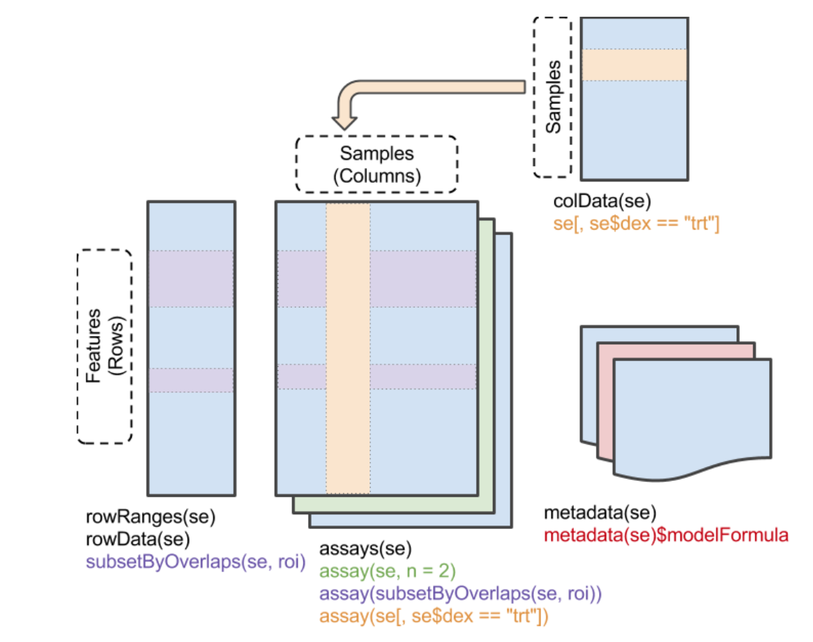
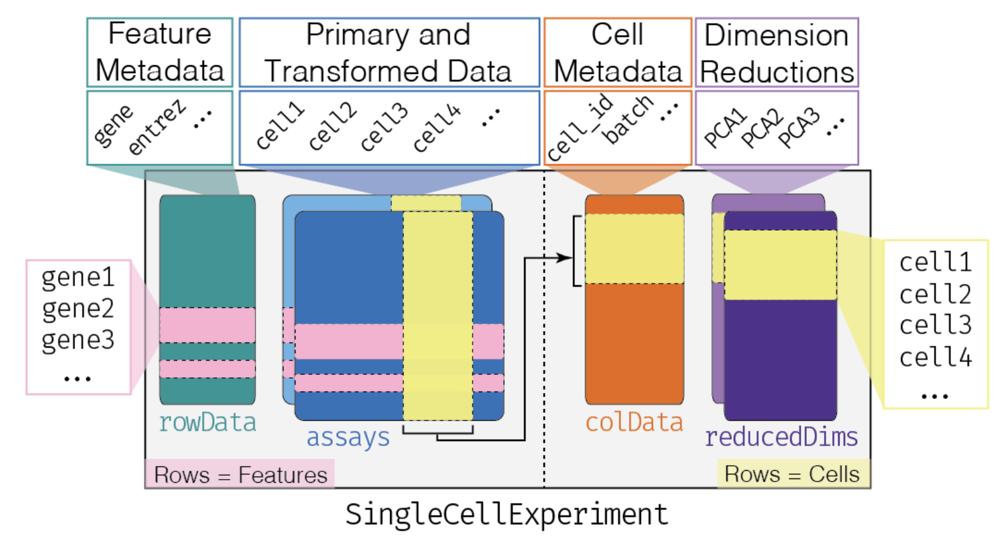

R
install.packages('mgcv')
BiocManager::install('HCAData')
BiocManager::install('danielschw188/Revelio')The estimated time for this lab is around 1h20.
R packages from different sources.R and Bioconductor.R and Bioconductor.Bioconductor and Seurat approaches to scRNAseq data analysis.R
“Hey, I’ve heard so many good things about this piece of software, it’s called ‘slingshot’? Heard of it? I really want to try it out on my dataset!!”
Or, in other words: “how do I install this or that brand new cutting-edge fancy package?”
R works with packages, available from different sources:
CRAN, the R developer team and official package provider: CRAN.Bioconductor, another package provider, with a primary focus on genomic-related packages: Bioconductor.GitHub.Let’s start by going over package installation.
Install mgcv, HCAData and revelio packages. Each of these three packages is available from a different source:
mgcv is a CRAN packageHCAData is a Bioconductor packagerevelio is a GitHub packageBiocManager::install() is the recommended way to install packages for a given version of Bioconductor: it installs packages from Bioconductor, from CRAN, and from GitHub (given a "<user>/<repo>" name), while making sure that all of them are compatible with each other.
R
install.packages('mgcv')
BiocManager::install('HCAData')
BiocManager::install('danielschw188/Revelio')You can check which version of Bioconductor you are using, and whether any installed package is out-of-date or too recent for it:
All the packages used in this workshop are already installed in your workshop session (and in the Docker image it is started from).
Package help pages are available at different places, depending on their source. That being said, there is a place I like to go to easily find information related to most packages:
For instance, check out Revelio package help pages.
R and Bioconductor classesWhile CRAN is a repository of general-purpose packages, Bioconductor is the greatest source of analytical tools, data and workflows dedicated to genomic projects in R. Read more about Bioconductor to fully understand how it builds up on top of R general features, especially with the specific classes it introduces.
The two main concepts behind Bioconductor’s success are the non-redundant classes of objects it provides and their inter-operability. Huber et al., Nat. Methods 2015 summarizes it well.
tibble tables:tibbles are built on the fundamental data.frame objects. They follow “tidy” concepts, all gathered in a common tidyverse. This set of key concepts help general data investigation and data visualization through a set of associated packages such as ggplot2.
R
library(tidyverse)
## ── Attaching core tidyverse packages ───────────────────── tidyverse 2.0.0 ──
## ✔ dplyr 1.2.1 ✔ readr 2.2.0
## ✔ forcats 1.0.1 ✔ stringr 1.6.0
## ✔ ggplot2 4.0.3 ✔ tibble 3.3.1
## ✔ lubridate 1.9.5 ✔ tidyr 1.3.2
## ✔ purrr 1.2.2
## ── Conflicts ─────────────────────────────────────── tidyverse_conflicts() ──
## ✖ dplyr::filter() masks stats::filter()
## ✖ dplyr::lag() masks stats::lag()
## ℹ Use the conflicted package (<http://conflicted.r-lib.org/>) to force all conflicts to become errors
dat <- tibble(
x = 1:5,
y = 1,
z = x ^ 2 + y,
class = c('a', 'a', 'b', 'b', 'c')
)
dat
## # A tibble: 5 × 4
## x y z class
## <int> <dbl> <dbl> <chr>
## 1 1 1 2 a
## 2 2 1 5 a
## 3 3 1 10 b
## 4 4 1 17 b
## 5 5 1 26 ctibblestibbles can be created from text files (or Excel files) using the readr package (part of tidyverse). We will read the list of genes quantified by cellranger in the AXH009 sample from Leir et al. (see Lab 1).
Rather than downloading the file by hand, we use BiocFileCache: it downloads a file the first time it is requested, stores it in a local cache, and simply returns the path to the cached copy afterwards.
R
library(BiocFileCache)
## Loading required package: dbplyr
##
## Attaching package: 'dbplyr'
## The following objects are masked from 'package:dplyr':
##
## ident, sql, sql_escape_ident, sql_escape_string
## OpenTelemetry error: there is no package called 'otelsdk'
## OpenTelemetry error: there is no package called 'otelsdk'
bfc <- BiocFileCache(ask = FALSE)
genes_file <- bfcrpath(bfc, "https://ftp.ncbi.nlm.nih.gov/geo/samples/GSM4486nnn/GSM4486714/suppl/GSM4486714_AXH009_genes.tsv.gz")
## adding rname 'https://ftp.ncbi.nlm.nih.gov/geo/samples/GSM4486nnn/GSM4486714/suppl/GSM4486714_AXH009_genes.tsv.gz'
genes_file
## BFC1
## "/opt/R-cache/R/BiocFileCache/1c51342f822_GSM4486714_AXH009_genes.tsv.gz"
genes <- read_tsv(genes_file, col_names = c('ID', 'Symbol'))
## Rows: 32738 Columns: 2
## ── Column specification ─────────────────────────────────────────────────────
## Delimiter: "\t"
## chr (2): ID, Symbol
##
## ℹ Use `spec()` to retrieve the full column specification for this data.
## ℹ Specify the column types or set `show_col_types = FALSE` to quiet this message.
genes
## # A tibble: 32,738 × 2
## ID Symbol
## <chr> <chr>
## 1 ENSG00000243485 MIR1302-10
## 2 ENSG00000237613 FAM138A
## 3 ENSG00000186092 OR4F5
## 4 ENSG00000238009 RP11-34P13.7
## 5 ENSG00000239945 RP11-34P13.8
## 6 ENSG00000237683 AL627309.1
## # ℹ 32,732 more rowstibbles:tibbles can be readily “sliced” (i.e. selecting rows by number/name), “filtered” (i.e. selecting rows by condition) and columns can be “selected”. All these operations are performed using verbs (most of them provided by the dplyr package, part of tidyverse).
R
slice(genes, 1:4)
## # A tibble: 4 × 2
## ID Symbol
## <chr> <chr>
## 1 ENSG00000243485 MIR1302-10
## 2 ENSG00000237613 FAM138A
## 3 ENSG00000186092 OR4F5
## 4 ENSG00000238009 RP11-34P13.7
filter(genes, Symbol == 'CFTR')
## # A tibble: 1 × 2
## ID Symbol
## <chr> <chr>
## 1 ENSG00000001626 CFTR
filter(genes, grepl('^CCDC.*', Symbol))
## # A tibble: 159 × 2
## ID Symbol
## <chr> <chr>
## 1 ENSG00000162592 CCDC27
## 2 ENSG00000160050 CCDC28B
## 3 ENSG00000186409 CCDC30
## 4 ENSG00000177868 CCDC23
## 5 ENSG00000159214 CCDC24
## 6 ENSG00000236624 CCDC163P
## # ℹ 153 more rows
filter(genes, grepl('^CCDC.*', Symbol), grepl('.*5$', Symbol))
## # A tibble: 9 × 2
## ID Symbol
## <chr> <chr>
## 1 ENSG00000136710 CCDC115
## 2 ENSG00000183323 CCDC125
## 3 ENSG00000147419 CCDC25
## 4 ENSG00000149548 CCDC15
## 5 ENSG00000139537 CCDC65
## 6 ENSG00000151838 CCDC175
## # ℹ 3 more rows
select(genes, 1)
## # A tibble: 32,738 × 1
## ID
## <chr>
## 1 ENSG00000243485
## 2 ENSG00000237613
## 3 ENSG00000186092
## 4 ENSG00000238009
## 5 ENSG00000239945
## 6 ENSG00000237683
## # ℹ 32,732 more rows
select(genes, ID)
## # A tibble: 32,738 × 1
## ID
## <chr>
## 1 ENSG00000243485
## 2 ENSG00000237613
## 3 ENSG00000186092
## 4 ENSG00000238009
## 5 ENSG00000239945
## 6 ENSG00000237683
## # ℹ 32,732 more rows
select(genes, matches('Sym.*'))
## # A tibble: 32,738 × 1
## Symbol
## <chr>
## 1 MIR1302-10
## 2 FAM138A
## 3 OR4F5
## 4 RP11-34P13.7
## 5 RP11-34P13.8
## 6 AL627309.1
## # ℹ 32,732 more rowsColumns can also be quickly added/modified using the mutate verb.
R
mutate(genes, chr = sample(1:22, n(), replace = TRUE))
## # A tibble: 32,738 × 3
## ID Symbol chr
## <chr> <chr> <int>
## 1 ENSG00000243485 MIR1302-10 16
## 2 ENSG00000237613 FAM138A 16
## 3 ENSG00000186092 OR4F5 15
## 4 ENSG00000238009 RP11-34P13.7 21
## 5 ENSG00000239945 RP11-34P13.8 3
## 6 ENSG00000237683 AL627309.1 9
## # ℹ 32,732 more rows|> pipe:Actions on tibbles can be piped as a chain with |>, just like | pipes stdout as the stdin of the next command in bash. In this case, the first argument is always the output of the previous function and is ommited. Because tidyverse functions generally return a modified version of the input, pipping works remarkably well in such context.
R
read_tsv(genes_file, col_names = c('ID', 'Symbol')) |>
mutate(chr = sample(1:22, n(), replace = TRUE)) |>
filter(chr == 2, grepl('^CCDC.*', Symbol)) |>
select(ID) |>
slice_head(n = 3)
## Rows: 32738 Columns: 2
## ── Column specification ─────────────────────────────────────────────────────
## Delimiter: "\t"
## chr (2): ID, Symbol
##
## ℹ Use `spec()` to retrieve the full column specification for this data.
## ℹ Specify the column types or set `show_col_types = FALSE` to quiet this message.
## # A tibble: 3 × 1
## ID
## <chr>
## 1 ENSG00000144395
## 2 ENSG00000198865
## 3 ENSG00000203952SummarizedExperiment class:The most fundamental class used to hold the content of large-scale quantitative analyses, such as counts of RNA-seq experiments, or high-throughput cytometry experiments or proteomics experiments.

Make sure you understand the structure of objects from this class. A dedicated workshop that I would recommend quickly going over is available here. Generally speaking, a SummarizedExperiment object contains matrix-like objects (the assays), with rows representing features (e.g. genes, transcripts, …) and each column representing a sample. Information specific to genes and samples are stored in “parallel” data frames, for example to store gene locations, tissue of expression, biotypes (for genes) or batch, generation date, or machine ID (for samples). On top of that, metadata are also stored in the object (to store description of a project, …).
An important difference with S3 list-like objects usually used in R is that most of the underlying data (organized in precisely structured "slots") is accessed using getter functions, rather than the familiar $ or [. Here are some important getters:
assay(), assays(): Extract matrix-like or list of matrix-like objects of identical dimensions. Since the objects are matrix-like, dim(), dimnames(), and 2-dimensional [, [<- methods are available.colData(): Annotations on each column (as a DataFrame): usually, description of each samplerowData(): Annotations on each row (as a DataFrame): usually, description of each genemetadata(): List of unstructured metadata describing the overall content of the object.Let’s dig into an example, with the airway dataset (provided by the airway package from Bioconductor).
R
library(SummarizedExperiment)
## Loading required package: MatrixGenerics
## Loading required package: matrixStats
##
## Attaching package: 'matrixStats'
## The following object is masked from 'package:dplyr':
##
## count
##
## Attaching package: 'MatrixGenerics'
## The following objects are masked from 'package:matrixStats':
##
## colAlls, colAnyNAs, colAnys, colAvgsPerRowSet, colCollapse,
## colCounts, colCummaxs, colCummins, colCumprods, colCumsums,
## colDiffs, colIQRDiffs, colIQRs, colLogSumExps, colMadDiffs,
## colMads, colMaxs, colMeans2, colMedians, colMins, colOrderStats,
## colProds, colQuantiles, colRanges, colRanks, colSdDiffs, colSds,
## colSums2, colTabulates, colVarDiffs, colVars, colWeightedMads,
## colWeightedMeans, colWeightedMedians, colWeightedSds,
## colWeightedVars, rowAlls, rowAnyNAs, rowAnys, rowAvgsPerColSet,
## rowCollapse, rowCounts, rowCummaxs, rowCummins, rowCumprods,
## rowCumsums, rowDiffs, rowIQRDiffs, rowIQRs, rowLogSumExps,
## rowMadDiffs, rowMads, rowMaxs, rowMeans2, rowMedians, rowMins,
## rowOrderStats, rowProds, rowQuantiles, rowRanges, rowRanks,
## rowSdDiffs, rowSds, rowSums2, rowTabulates, rowVarDiffs,
## rowVars, rowWeightedMads, rowWeightedMeans, rowWeightedMedians,
## rowWeightedSds, rowWeightedVars
## Loading required package: GenomicRanges
## Loading required package: stats4
## Loading required package: BiocGenerics
## Loading required package: generics
##
## Attaching package: 'generics'
## The following object is masked from 'package:lubridate':
##
## as.difftime
## The following object is masked from 'package:dplyr':
##
## explain
## The following objects are masked from 'package:base':
##
## as.difftime, as.factor, as.ordered, intersect, is.element,
## setdiff, setequal, union
##
## Attaching package: 'BiocGenerics'
## The following object is masked from 'package:dplyr':
##
## combine
## The following objects are masked from 'package:stats':
##
## IQR, mad, sd, var, xtabs
## The following object is masked from 'package:utils':
##
## data
## The following objects are masked from 'package:base':
##
## Filter, Find, Map, Position, Reduce, anyDuplicated, aperm,
## append, as.data.frame, basename, cbind, colnames, dirname,
## do.call, duplicated, eval, evalq, get, grep, grepl, is.unsorted,
## lapply, mapply, match, mget, order, paste, pmax, pmax.int, pmin,
## pmin.int, rank, rbind, rownames, sapply, saveRDS, scale,
## sequence, table, tapply, transform, unique, unsplit, which.max,
## which.min
## Loading required package: S4Vectors
##
## Attaching package: 'S4Vectors'
## The following objects are masked from 'package:lubridate':
##
## second, second<-
## The following objects are masked from 'package:dplyr':
##
## first, rename
## The following object is masked from 'package:tidyr':
##
## expand
## The following object is masked from 'package:utils':
##
## findMatches
## The following objects are masked from 'package:base':
##
## I, expand.grid, unname
## Loading required package: IRanges
##
## Attaching package: 'IRanges'
## The following object is masked from 'package:lubridate':
##
## %within%
## The following objects are masked from 'package:dplyr':
##
## collapse, desc, slice
## The following object is masked from 'package:purrr':
##
## reduce
## Loading required package: Seqinfo
## Loading required package: Biobase
## Welcome to Bioconductor
##
## Vignettes contain introductory material; view with
## 'browseVignettes()'. To cite Bioconductor, see
## 'citation("Biobase")', and for packages 'citation("pkgname")'.
##
## Attaching package: 'Biobase'
## The following object is masked from 'package:MatrixGenerics':
##
## rowMedians
## The following objects are masked from 'package:matrixStats':
##
## anyMissing, rowMedians
library(airway)
data(airway)
airway
## class: RangedSummarizedExperiment
## dim: 63677 8
## metadata(1): ''
## assays(1): counts
## rownames(63677): ENSG00000000003 ENSG00000000005 ... ENSG00000273492
## ENSG00000273493
## rowData names(10): gene_id gene_name ... seq_coord_system symbol
## colnames(8): SRR1039508 SRR1039509 ... SRR1039520 SRR1039521
## colData names(9): SampleName cell ... Sample BioSampleWhat are the dimensions of the dataset? What type of quantitative data is stored? Which features are assessed?
R
dim(airway)
## [1] 63677 8
rowData(airway)
## DataFrame with 63677 rows and 10 columns
## gene_id gene_name entrezid gene_biotype
## <character> <character> <integer> <character>
## ENSG00000000003 ENSG00000000003 TSPAN6 NA protein_coding
## ENSG00000000005 ENSG00000000005 TNMD NA protein_coding
## ENSG00000000419 ENSG00000000419 DPM1 NA protein_coding
## ENSG00000000457 ENSG00000000457 SCYL3 NA protein_coding
## ENSG00000000460 ENSG00000000460 C1orf112 NA protein_coding
## ... ... ... ... ...
## ENSG00000273489 ENSG00000273489 RP11-180C16.1 NA antisense
## ENSG00000273490 ENSG00000273490 TSEN34 NA protein_coding
## ENSG00000273491 ENSG00000273491 RP11-138A9.2 NA lincRNA
## ENSG00000273492 ENSG00000273492 AP000230.1 NA lincRNA
## ENSG00000273493 ENSG00000273493 RP11-80H18.4 NA lincRNA
## gene_seq_start gene_seq_end seq_name seq_strand
## <integer> <integer> <character> <integer>
## ENSG00000000003 99883667 99894988 X -1
## ENSG00000000005 99839799 99854882 X 1
## ENSG00000000419 49551404 49575092 20 -1
## ENSG00000000457 169818772 169863408 1 -1
## ENSG00000000460 169631245 169823221 1 1
## ... ... ... ... ...
## ENSG00000273489 131178723 131182453 7 -1
## ENSG00000273490 54693789 54697585 HSCHR19LRC_LRC_J_CTG1 1
## ENSG00000273491 130600118 130603315 HG1308_PATCH 1
## ENSG00000273492 27543189 27589700 21 1
## ENSG00000273493 58315692 58315845 3 1
## seq_coord_system symbol
## <integer> <character>
## ENSG00000000003 NA TSPAN6
## ENSG00000000005 NA TNMD
## ENSG00000000419 NA DPM1
## ENSG00000000457 NA SCYL3
## ENSG00000000460 NA C1orf112
## ... ... ...
## ENSG00000273489 NA RP11-180C16.1
## ENSG00000273490 NA TSEN34
## ENSG00000273491 NA RP11-138A9.2
## ENSG00000273492 NA AP000230.1
## ENSG00000273493 NA RP11-80H18.4
colData(airway)
## DataFrame with 8 rows and 9 columns
## SampleName cell dex albut Run avgLength
## <factor> <factor> <factor> <factor> <factor> <integer>
## SRR1039508 GSM1275862 N61311 untrt untrt SRR1039508 126
## SRR1039509 GSM1275863 N61311 trt untrt SRR1039509 126
## SRR1039512 GSM1275866 N052611 untrt untrt SRR1039512 126
## SRR1039513 GSM1275867 N052611 trt untrt SRR1039513 87
## SRR1039516 GSM1275870 N080611 untrt untrt SRR1039516 120
## SRR1039517 GSM1275871 N080611 trt untrt SRR1039517 126
## SRR1039520 GSM1275874 N061011 untrt untrt SRR1039520 101
## SRR1039521 GSM1275875 N061011 trt untrt SRR1039521 98
## Experiment Sample BioSample
## <factor> <factor> <factor>
## SRR1039508 SRX384345 SRS508568 SAMN02422669
## SRR1039509 SRX384346 SRS508567 SAMN02422675
## SRR1039512 SRX384349 SRS508571 SAMN02422678
## SRR1039513 SRX384350 SRS508572 SAMN02422670
## SRR1039516 SRX384353 SRS508575 SAMN02422682
## SRR1039517 SRX384354 SRS508576 SAMN02422673
## SRR1039520 SRX384357 SRS508579 SAMN02422683
## SRR1039521 SRX384358 SRS508580 SAMN02422677Can you create a subset of the data corresponding to LRG genes in untreated samples?
R
untreated_LRG <- airway[grepl('^LRG_', rownames(airway)), airway$dex == 'untrt']
untreated_LRG
## class: RangedSummarizedExperiment
## dim: 0 4
## metadata(1): ''
## assays(1): counts
## rownames(0):
## rowData names(10): gene_id gene_name ... seq_coord_system symbol
## colnames(4): SRR1039508 SRR1039512 SRR1039516 SRR1039520
## colData names(9): SampleName cell ... Sample BioSampleGenomicRanges class (a.k.a. GRanges):GenomicRanges are a type of IntervalRanges, they are useful to describe genomic intervals. Each entry in a GRanges object has a seqnames(), a start() and an end() coordinates, a strand(), as well as associated metadata (mcols()). They can be built from scratch using tibbles converted with makeGRangesFromDataFrame().
R
library(GenomicRanges)
gr <- read_tsv(genes_file, col_names = c('ID', 'Symbol')) |>
mutate(
chr = sample(1:22, n(), replace = TRUE),
start = sample(1:1000, n(), replace = TRUE),
end = sample(10000:20000, n(), replace = TRUE),
strand = sample(c('-', '+'), n(), replace = TRUE)
) |>
makeGRangesFromDataFrame(keep.extra.columns = TRUE)
## Rows: 32738 Columns: 2
## ── Column specification ─────────────────────────────────────────────────────
## Delimiter: "\t"
## chr (2): ID, Symbol
##
## ℹ Use `spec()` to retrieve the full column specification for this data.
## ℹ Specify the column types or set `show_col_types = FALSE` to quiet this message.
gr
## GRanges object with 32738 ranges and 2 metadata columns:
## seqnames ranges strand | ID Symbol
## <Rle> <IRanges> <Rle> | <character> <character>
## [1] 20 447-13062 + | ENSG00000243485 MIR1302-10
## [2] 10 80-15170 + | ENSG00000237613 FAM138A
## [3] 14 115-18067 + | ENSG00000186092 OR4F5
## [4] 22 983-14878 + | ENSG00000238009 RP11-34P13.7
## [5] 16 162-13958 + | ENSG00000239945 RP11-34P13.8
## ... ... ... ... . ... ...
## [32734] 7 437-19480 - | ENSG00000215635 AC145205.1
## [32735] 7 284-16460 + | ENSG00000268590 BAGE5
## [32736] 10 129-17524 + | ENSG00000251180 CU459201.1
## [32737] 9 511-11068 - | ENSG00000215616 AC002321.2
## [32738] 15 813-19672 - | ENSG00000215611 AC002321.1
## -------
## seqinfo: 22 sequences from an unspecified genome; no seqlengths
mcols(gr)
## DataFrame with 32738 rows and 2 columns
## ID Symbol
## <character> <character>
## 1 ENSG00000243485 MIR1302-10
## 2 ENSG00000237613 FAM138A
## 3 ENSG00000186092 OR4F5
## 4 ENSG00000238009 RP11-34P13.7
## 5 ENSG00000239945 RP11-34P13.8
## ... ... ...
## 32734 ENSG00000215635 AC145205.1
## 32735 ENSG00000268590 BAGE5
## 32736 ENSG00000251180 CU459201.1
## 32737 ENSG00000215616 AC002321.2
## 32738 ENSG00000215611 AC002321.1Just like tidyverse in R, tidy functions are provided for GRanges by the plyranges package.
R
library(plyranges)
##
## Attaching package: 'plyranges'
## The following objects are masked from 'package:dplyr':
##
## between, n, n_distinct
gr |>
filter(start < 400, end > 12000, end < 15000) |>
seqnames() |>
table()
## 1 2 3 4 5 6 7 8 9 10 11 12 13 14 15 16 17 18 19
## 193 170 143 192 194 176 157 176 208 177 179 180 171 177 184 209 156 185 169
## 20 21 22
## 157 178 189Can you find a way to easily read common input files such as bed files into GRanges? Try it on the list of accessible chromatin regions (peaks) identified by 10x Genomics in a single-cell ATAC-seq experiment of human PBMCs (which we will analyse in Lab 7): https://cf.10xgenomics.com/samples/cell-atac/1.0.1/atac_v1_pbmc_10k/atac_v1_pbmc_10k_peaks.bed.
R
library(rtracklayer)
peaks_file <- file.path(tempdir(), "atac_v1_pbmc_10k_peaks.bed")
download.file(
"https://cf.10xgenomics.com/samples/cell-atac/1.0.1/atac_v1_pbmc_10k/atac_v1_pbmc_10k_peaks.bed",
destfile = peaks_file
)
peaks <- import(peaks_file)
peaks
## GRanges object with 89796 ranges and 0 metadata columns:
## seqnames ranges strand
## <Rle> <IRanges> <Rle>
## [1] chr1 565108-565550 *
## [2] chr1 569175-569639 *
## [3] chr1 713461-714823 *
## [4] chr1 752423-753038 *
## [5] chr1 762107-763359 *
## ... ... ... ...
## [89792] chrY 58993393-58993760 *
## [89793] chrY 58994572-58994823 *
## [89794] chrY 58996353-58997331 *
## [89795] chrY 59001783-59002175 *
## [89796] chrY 59017144-59017246 *
## -------
## seqinfo: 24 sequences from an unspecified genome; no seqlengthsHow would you have proceeded without rtracklayer? Check the start coordinates: what do you see? Comment on the interest of using Bioconductor.
R
peaks_manual <- read_tsv(peaks_file, col_names = c('chr', 'start', 'end')) |>
makeGRangesFromDataFrame()
## Rows: 89796 Columns: 3
## ── Column specification ─────────────────────────────────────────────────────
## Delimiter: "\t"
## chr (1): chr
## dbl (2): start, end
##
## ℹ Use `spec()` to retrieve the full column specification for this data.
## ℹ Specify the column types or set `show_col_types = FALSE` to quiet this message.
peaks_manual
## GRanges object with 89796 ranges and 0 metadata columns:
## seqnames ranges strand
## <Rle> <IRanges> <Rle>
## [1] chr1 565107-565550 *
## [2] chr1 569174-569639 *
## [3] chr1 713460-714823 *
## [4] chr1 752422-753038 *
## [5] chr1 762106-763359 *
## ... ... ... ...
## [89792] chrY 58993392-58993760 *
## [89793] chrY 58994571-58994823 *
## [89794] chrY 58996352-58997331 *
## [89795] chrY 59001782-59002175 *
## [89796] chrY 59017143-59017246 *
## -------
## seqinfo: 24 sequences from an unspecified genome; no seqlengths
head(start(peaks))
## [1] 565108 569175 713461 752423 762107 779590
head(start(peaks_manual))
## [1] 565107 569174 713460 752422 762106 779589bed files use 0-based, half-open coordinates, whereas GRanges (like most of Bioconductor) use 1-based, closed coordinates: rtracklayer::import() takes care of the conversion for us.
For single-cell RNA-seq projects, Bioconductor has been introducting new classes and standards very rapidly in the past few years. Notably, several packages are increasingly becoming central for single-cell analysis:
SingleCellExperimentscrapperscaterscranscuttleblusterbatchelorSingleRDropletUtilsslingshottradeSeqSingleCellExperiment is the fundamental class designed to contain single-cell (RNA-seq) data in Bioconductor ecosystem. It is a modified version of the SummarizedExperiment object, so most of the getters/setters are shared with this class.

Let’s load a dataset of mouse haematopoietic stem and progenitor cells (Nestorowa et al., Blood 2016, doi: 10.1182/blood-2016-05-716480), distributed by the scRNAseq package, and normalize its counts.
R
library(SingleCellExperiment)
sce <- scRNAseq::fetchDataset("nestorowa-hsc-2016", "2024-04-18")
## Load the counts in memory, as a sparse matrix
counts(sce) <- as(counts(sce), "dgCMatrix")
## Compute normalized counts (more on this in the next labs!),
## and store them as a sparse matrix too
sce <- scrapper::normalizeRnaCounts.se(sce, more.norm.args = list(delayed = FALSE))
sce$label <- sce$broad
sce
## class: SingleCellExperiment
## dim: 46078 1920
## metadata(0):
## assays(2): counts logcounts
## rownames(46078): ENSMUSG00000000001 ENSMUSG00000000003 ...
## ENSMUSG00000107391 ENSMUSG00000107392
## rowData names(0):
## colnames(1920): HSPC_007 HSPC_013 ... Prog_852 Prog_810
## colData names(11): gate broad ... sizeFactor label
## reducedDimNames(1): diffusion
## mainExpName: endogenous
## altExpNames(2): ERCC FACS
class(sce)
## [1] "SingleCellExperiment"
## attr(,"package")
## [1] "SingleCellExperiment"Several slots can be accessed in a SingleCellExperiment object, just like the SummarizedExperiment object it’s been adapted from:
R
colData(sce)
## DataFrame with 1920 rows and 11 columns
## gate broad broad.mpp fine fine.mpp
## <character> <character> <character> <character> <character>
## HSPC_007 HSPC NA NA NA NA
## HSPC_013 HSPC LMPP NA LMPP NA
## HSPC_019 HSPC LMPP NA NA NA
## HSPC_025 HSPC MPP MPP1 NA NA
## HSPC_031 HSPC MPP STHSC NA NA
## ... ... ... ... ... ...
## Prog_834 Prog CMP NA NA NA
## Prog_840 Prog GMP NA GMP NA
## Prog_846 Prog GMP NA NA NA
## Prog_852 Prog MEP NA MEP NA
## Prog_810 Prog CMP NA CMP NA
## ESLAM HSC1 projected metrics sizeFactor
## <logical> <logical> <logical> <DataFrame> <numeric>
## HSPC_007 FALSE FALSE FALSE 194829: 5022:0:... 0.0274355
## HSPC_013 FALSE FALSE FALSE 110530: 15271:0:... 0.0902610
## HSPC_019 FALSE FALSE FALSE 86825: 2708:0:... 0.0199822
## HSPC_025 FALSE FALSE FALSE 212206:107278:0:... 0.5199231
## HSPC_031 FALSE FALSE FALSE 690411:227480:0:... 1.1041905
## ... ... ... ... ... ...
## Prog_834 FALSE FALSE FALSE 471273:296060:0:... 1.662472
## Prog_840 FALSE FALSE FALSE 421195:317394:0:... 1.722307
## Prog_846 FALSE FALSE FALSE 337564:253387:0:... 1.278245
## Prog_852 FALSE FALSE FALSE 200193:136478:0:... 0.640825
## Prog_810 FALSE FALSE FALSE 857257:396247:0:... 2.605001
## label
## <character>
## HSPC_007 NA
## HSPC_013 LMPP
## HSPC_019 LMPP
## HSPC_025 MPP
## HSPC_031 MPP
## ... ...
## Prog_834 CMP
## Prog_840 GMP
## Prog_846 GMP
## Prog_852 MEP
## Prog_810 CMP
rowData(sce)
## DataFrame with 46078 rows and 0 columns
metadata(sce)
## list()
dim(sce)
## [1] 46078 1920
assays(sce)
## List of length 2
## names(2): counts logcountsQuantitative metrics for scRNAseq studies can also be stored in assays:
R
assays(sce)
## List of length 2
## names(2): counts logcounts
assay(sce, 'counts')[1:10, 1:10]
## 10 x 10 sparse Matrix of class "dgCMatrix"
## [[ suppressing 10 column names 'HSPC_007', 'HSPC_013', 'HSPC_019' ... ]]
##
## ENSMUSG00000000001 . 7 1 185 2 2 136 232 354 181
## ENSMUSG00000000003 . . . . . . . . . .
## ENSMUSG00000000028 4 1 2 4 3 1 1 2 2 .
## ENSMUSG00000000031 . . . . . . . . . .
## ENSMUSG00000000037 . . . . . . . . 1 20
## ENSMUSG00000000049 . . . . . . . . . .
## ENSMUSG00000000056 1 1 2 1 2 3 . . . .
## ENSMUSG00000000058 1 . . . . . . . 242 1
## ENSMUSG00000000078 . 18 3 9 51 3 46 56 1 364
## ENSMUSG00000000085 2 1 2 . . 153 . . . 59
assay(sce, 'logcounts')[1:10, 1:10]
## 10 x 10 sparse Matrix of class "dgCMatrix"
## [[ suppressing 10 column names 'HSPC_007', 'HSPC_013', 'HSPC_019' ... ]]
##
## ENSMUSG00000000001 . 6.295593 5.673688 8.479060 1.491228 2.293997
## ENSMUSG00000000003 . . . . . .
## ENSMUSG00000000028 7.197673 3.594427 6.659487 3.119928 1.894109 1.561724
## ENSMUSG00000000031 . . . . . .
## ENSMUSG00000000037 . . . . . .
## ENSMUSG00000000049 . . . . . .
## ENSMUSG00000000056 5.226859 3.594427 6.659487 1.547628 1.491228 2.777408
## ENSMUSG00000000058 5.226859 . . . . .
## ENSMUSG00000000078 . 7.646895 7.239684 4.194580 5.560338 2.777408
## ENSMUSG00000000085 6.207467 3.594427 6.659487 . . 8.227211
##
## ENSMUSG00000000001 9.742067 6.744344 9.426313 9.100361
## ENSMUSG00000000003 . . . .
## ENSMUSG00000000028 2.865797 0.937822 2.287321 .
## ENSMUSG00000000031 . . . .
## ENSMUSG00000000037 . . 1.556181 5.943448
## ENSMUSG00000000049 . . . .
## ENSMUSG00000000056 . . . .
## ENSMUSG00000000058 . . 8.878541 2.009702
## ENSMUSG00000000078 8.181458 4.735401 1.556181 10.106987
## ENSMUSG00000000085 . . . 7.488583
counts(sce)[1:10, 1:10]
## 10 x 10 sparse Matrix of class "dgCMatrix"
## [[ suppressing 10 column names 'HSPC_007', 'HSPC_013', 'HSPC_019' ... ]]
##
## ENSMUSG00000000001 . 7 1 185 2 2 136 232 354 181
## ENSMUSG00000000003 . . . . . . . . . .
## ENSMUSG00000000028 4 1 2 4 3 1 1 2 2 .
## ENSMUSG00000000031 . . . . . . . . . .
## ENSMUSG00000000037 . . . . . . . . 1 20
## ENSMUSG00000000049 . . . . . . . . . .
## ENSMUSG00000000056 1 1 2 1 2 3 . . . .
## ENSMUSG00000000058 1 . . . . . . . 242 1
## ENSMUSG00000000078 . 18 3 9 51 3 46 56 1 364
## ENSMUSG00000000085 2 1 2 . . 153 . . . 59
logcounts(sce)[1:10, 1:10]
## 10 x 10 sparse Matrix of class "dgCMatrix"
## [[ suppressing 10 column names 'HSPC_007', 'HSPC_013', 'HSPC_019' ... ]]
##
## ENSMUSG00000000001 . 6.295593 5.673688 8.479060 1.491228 2.293997
## ENSMUSG00000000003 . . . . . .
## ENSMUSG00000000028 7.197673 3.594427 6.659487 3.119928 1.894109 1.561724
## ENSMUSG00000000031 . . . . . .
## ENSMUSG00000000037 . . . . . .
## ENSMUSG00000000049 . . . . . .
## ENSMUSG00000000056 5.226859 3.594427 6.659487 1.547628 1.491228 2.777408
## ENSMUSG00000000058 5.226859 . . . . .
## ENSMUSG00000000078 . 7.646895 7.239684 4.194580 5.560338 2.777408
## ENSMUSG00000000085 6.207467 3.594427 6.659487 . . 8.227211
##
## ENSMUSG00000000001 9.742067 6.744344 9.426313 9.100361
## ENSMUSG00000000003 . . . .
## ENSMUSG00000000028 2.865797 0.937822 2.287321 .
## ENSMUSG00000000031 . . . .
## ENSMUSG00000000037 . . 1.556181 5.943448
## ENSMUSG00000000049 . . . .
## ENSMUSG00000000056 . . . .
## ENSMUSG00000000058 . . 8.878541 2.009702
## ENSMUSG00000000078 8.181458 4.735401 1.556181 10.106987
## ENSMUSG00000000085 . . . 7.488583Check the colData() output of the sce object. What information is stored there? How can you access the different objects stored in colData?
R
colData(sce)
## DataFrame with 1920 rows and 11 columns
## gate broad broad.mpp fine fine.mpp
## <character> <character> <character> <character> <character>
## HSPC_007 HSPC NA NA NA NA
## HSPC_013 HSPC LMPP NA LMPP NA
## HSPC_019 HSPC LMPP NA NA NA
## HSPC_025 HSPC MPP MPP1 NA NA
## HSPC_031 HSPC MPP STHSC NA NA
## ... ... ... ... ... ...
## Prog_834 Prog CMP NA NA NA
## Prog_840 Prog GMP NA GMP NA
## Prog_846 Prog GMP NA NA NA
## Prog_852 Prog MEP NA MEP NA
## Prog_810 Prog CMP NA CMP NA
## ESLAM HSC1 projected metrics sizeFactor
## <logical> <logical> <logical> <DataFrame> <numeric>
## HSPC_007 FALSE FALSE FALSE 194829: 5022:0:... 0.0274355
## HSPC_013 FALSE FALSE FALSE 110530: 15271:0:... 0.0902610
## HSPC_019 FALSE FALSE FALSE 86825: 2708:0:... 0.0199822
## HSPC_025 FALSE FALSE FALSE 212206:107278:0:... 0.5199231
## HSPC_031 FALSE FALSE FALSE 690411:227480:0:... 1.1041905
## ... ... ... ... ... ...
## Prog_834 FALSE FALSE FALSE 471273:296060:0:... 1.662472
## Prog_840 FALSE FALSE FALSE 421195:317394:0:... 1.722307
## Prog_846 FALSE FALSE FALSE 337564:253387:0:... 1.278245
## Prog_852 FALSE FALSE FALSE 200193:136478:0:... 0.640825
## Prog_810 FALSE FALSE FALSE 857257:396247:0:... 2.605001
## label
## <character>
## HSPC_007 NA
## HSPC_013 LMPP
## HSPC_019 LMPP
## HSPC_025 MPP
## HSPC_031 MPP
## ... ...
## Prog_834 CMP
## Prog_840 GMP
## Prog_846 GMP
## Prog_852 MEP
## Prog_810 CMP
lapply(colData(sce), class)
## $gate
## [1] "character"
##
## $broad
## [1] "character"
##
## $broad.mpp
## [1] "character"
##
## $fine
## [1] "character"
##
## $fine.mpp
## [1] "character"
##
## $ESLAM
## [1] "logical"
##
## $HSC1
## [1] "logical"
##
## $projected
## [1] "logical"
##
## $metrics
## [1] "DFrame"
## attr(,"package")
## [1] "S4Vectors"
##
## $sizeFactor
## [1] "numeric"
##
## $label
## [1] "character"
head(colData(sce)[[1]])
## [1] "HSPC" "HSPC" "HSPC" "HSPC" "HSPC" "HSPC"
head(colData(sce)[['broad']])
## [1] NA "LMPP" "LMPP" "MPP" "MPP" "MPP"
table(sce$broad, useNA = 'ifany')
##
## CMP GMP LMPP LTHSC MEP MPP <NA>
## 328 123 280 323 362 368 136
head(sce$sizeFactor)
## [1] 0.02743552 0.09026097 0.01998215 0.51992308 1.10419049 0.51227802Some information is stored as nested tables, e.g. the metrics column:
R
head(colData(sce)[['metrics']])
## DataFrame with 6 rows and 5 columns
## X__no_feature X__ambiguous X__too_low_aQual X__not_aligned
## <numeric> <numeric> <numeric> <numeric>
## HSPC_007 194829 5022 0 5820455
## HSPC_013 110530 15271 0 1562724
## HSPC_019 86825 2708 0 1407254
## HSPC_025 212206 107278 0 1810368
## HSPC_031 690411 227480 0 6097116
## HSPC_037 242472 126874 0 2267894
## X__alignment_not_unique
## <numeric>
## HSPC_007 0
## HSPC_013 0
## HSPC_019 0
## HSPC_025 0
## HSPC_031 0
## HSPC_037 0A SingleCellExperiment can also hold alternative experiments, measured on the same cells but for different features: here, the counts of spike-in transcripts (ERCC) and the cell surface marker intensities measured by flow cytometry when sorting the cells (FACS).
Retrieve the FACS measurements of the first cells.
R
altExpNames(sce)
## [1] "ERCC" "FACS"
altExp(sce, 'FACS')
## class: SingleCellExperiment
## dim: 10 1920
## metadata(0):
## assays(1): intensities
## rownames(10): FSC.H CD34 ... Lin Sca1
## rowData names(0):
## colnames(1920): HSPC_007 HSPC_013 ... Prog_852 Prog_810
## colData names(0):
## reducedDimNames(0):
## mainExpName: NULL
## altExpNames(0):
assay(altExp(sce, 'FACS'))[, 1:5]
## <10 x 5> DelayedMatrix object of type "double":
## HSPC_007 HSPC_013 HSPC_019 HSPC_025 HSPC_031
## FSC.H NA NA NA 2.767519e+04 3.904752e+04
## CD34 NA NA NA 1.179906e+00 1.035124e+00
## CD16 NA NA NA 1.129986e+00 1.377646e+00
## c.Kit NA NA NA 1.508063e+00 1.477311e+00
## EPCR NA NA NA 1.351540e+00 1.642698e+00
## Flk2 NA NA NA 2.291032e-01 2.540589e-01
## CD150 NA NA NA 5.002410e-01 3.296843e-01
## CD48 NA NA NA 6.045971e-01 6.684350e-01
## Lin NA NA NA 2.942638e-01 3.419017e-01
## Sca1 NA NA NA 1.743715e+00 1.030498e+00Are there any reduced dimensionality representation of the data stored in the sce object? How can we run a PCA using normalized counts of the 1,000 most variable genes?
R
reducedDims(sce)
## List of length 1
## names(1): diffusion
vars <- MatrixGenerics::rowVars(logcounts(sce))
top_genes <- order(vars, decreasing = TRUE)[1:1000]
pca <- prcomp(t(as.matrix(logcounts(sce)[top_genes, ])), rank. = 50)
names(pca)
## [1] "sdev" "rotation" "center" "scale" "x"
dim(pca$x)
## [1] 1920 50
head(pca$x[, 1:10])
## PC1 PC2 PC3 PC4 PC5 PC6
## HSPC_007 14.907066 -7.593049 -10.334586 8.7499017 5.1586819 8.9897222
## HSPC_013 -10.334074 -13.365665 -4.253436 13.6295583 -1.2041570 -0.7977678
## HSPC_019 -2.980249 6.828359 -5.965514 0.7932646 0.7082373 -2.7505610
## HSPC_025 -25.967614 -3.638078 -12.013803 11.9481600 -1.7353565 -5.1019669
## HSPC_031 -23.756524 17.325639 1.296087 8.5516833 1.4945298 -5.6223206
## HSPC_037 -27.969431 2.832235 3.300004 18.4563416 11.3312596 1.3427835
## PC7 PC8 PC9 PC10
## HSPC_007 13.101831 0.7113269 17.869108 -7.802902
## HSPC_013 -4.845274 -1.3151442 10.337638 -1.315440
## HSPC_019 3.268548 3.4668216 6.131350 -9.108714
## HSPC_025 -4.223475 -3.8640182 9.067266 1.627898
## HSPC_031 -1.706465 10.4310956 6.098249 -1.530326
## HSPC_037 -5.870450 12.0803532 1.133259 -2.062560We will see more advanced ways of reducing scRNAseq data dimensionality in the coming lectures and labs.
Seurat is another very popular ecosystem to investigate scRNAseq data. It is primarily developed and maintained by the Satija Lab. It originally begun as a single package aiming at encompassing “all” (most) aspects of scRNAseq analysis. However, it rapidly evolved in a much larger project, and now operates along with other “wrappers” and extensions. It also has a very extended support from the lab group. All in all, is provides a (somewhat) simple workflow to start investigating scRNAseq data.
It is important to chose one standard that you feel comfortable with yourself. Which standard provides the most intuitive approach for you? Do you prefer an “all-in-one, plug-n-play” workflow (Seurat-style), or a modular approach (Bioconductor-style)? Which documentation is easier to read for you, a central full-featured website with extensive examples (Seurat-style), or “programmatic”-style vignettes (Bioconductor-style)?
This course will mostly rely on Bioconductor-based methods, but sometimes use Seurat-based methods. In the absence of coordination of data structures, the next best solution is to write functions to coerce an object from a certain class to another class (i.e. Seurat to SingleCellExperiment, or vice-versa). Luckily, this is quite straightforward in R for these 2 data classes:
R
sce_seurat <- Seurat::as.Seurat(removeAltExps(sce))
sce
## class: SingleCellExperiment
## dim: 46078 1920
## metadata(0):
## assays(2): counts logcounts
## rownames(46078): ENSMUSG00000000001 ENSMUSG00000000003 ...
## ENSMUSG00000107391 ENSMUSG00000107392
## rowData names(0):
## colnames(1920): HSPC_007 HSPC_013 ... Prog_852 Prog_810
## colData names(11): gate broad ... sizeFactor label
## reducedDimNames(1): diffusion
## mainExpName: endogenous
## altExpNames(2): ERCC FACS
sce_seurat
## An object of class Seurat
## 46078 features across 1920 samples within 1 assay
## Active assay: endogenous (46078 features, 0 variable features)
## 2 layers present: counts, data
## 1 dimensional reduction calculated: diffusion
sce2 <- Seurat::as.SingleCellExperiment(sce_seurat)Note that we had to remove the alternative experiments (altExps) before converting the object: Seurat stores each of them as an additional Assay, and cannot convert the FACS intensities, which are not counts.
Do you see any change between sce and the corresponding, “back-converted”, sce2 objects? Explain these differences.
R
sce
## class: SingleCellExperiment
## dim: 46078 1920
## metadata(0):
## assays(2): counts logcounts
## rownames(46078): ENSMUSG00000000001 ENSMUSG00000000003 ...
## ENSMUSG00000107391 ENSMUSG00000107392
## rowData names(0):
## colnames(1920): HSPC_007 HSPC_013 ... Prog_852 Prog_810
## colData names(11): gate broad ... sizeFactor label
## reducedDimNames(1): diffusion
## mainExpName: endogenous
## altExpNames(2): ERCC FACS
sce2
## class: SingleCellExperiment
## dim: 46078 1920
## metadata(0):
## assays(2): counts logcounts
## rownames(46078): ENSMUSG00000000001 ENSMUSG00000000003 ...
## ENSMUSG00000107391 ENSMUSG00000107392
## rowData names(0):
## colnames(1920): HSPC_007 HSPC_013 ... Prog_852 Prog_810
## colData names(19): orig.ident nCount_endogenous ... label ident
## reducedDimNames(1): DIFFUSION
## mainExpName: endogenous
## altExpNames(0):
#
colData(sce)
## DataFrame with 1920 rows and 11 columns
## gate broad broad.mpp fine fine.mpp
## <character> <character> <character> <character> <character>
## HSPC_007 HSPC NA NA NA NA
## HSPC_013 HSPC LMPP NA LMPP NA
## HSPC_019 HSPC LMPP NA NA NA
## HSPC_025 HSPC MPP MPP1 NA NA
## HSPC_031 HSPC MPP STHSC NA NA
## ... ... ... ... ... ...
## Prog_834 Prog CMP NA NA NA
## Prog_840 Prog GMP NA GMP NA
## Prog_846 Prog GMP NA NA NA
## Prog_852 Prog MEP NA MEP NA
## Prog_810 Prog CMP NA CMP NA
## ESLAM HSC1 projected metrics sizeFactor
## <logical> <logical> <logical> <DataFrame> <numeric>
## HSPC_007 FALSE FALSE FALSE 194829: 5022:0:... 0.0274355
## HSPC_013 FALSE FALSE FALSE 110530: 15271:0:... 0.0902610
## HSPC_019 FALSE FALSE FALSE 86825: 2708:0:... 0.0199822
## HSPC_025 FALSE FALSE FALSE 212206:107278:0:... 0.5199231
## HSPC_031 FALSE FALSE FALSE 690411:227480:0:... 1.1041905
## ... ... ... ... ... ...
## Prog_834 FALSE FALSE FALSE 471273:296060:0:... 1.662472
## Prog_840 FALSE FALSE FALSE 421195:317394:0:... 1.722307
## Prog_846 FALSE FALSE FALSE 337564:253387:0:... 1.278245
## Prog_852 FALSE FALSE FALSE 200193:136478:0:... 0.640825
## Prog_810 FALSE FALSE FALSE 857257:396247:0:... 2.605001
## label
## <character>
## HSPC_007 NA
## HSPC_013 LMPP
## HSPC_019 LMPP
## HSPC_025 MPP
## HSPC_031 MPP
## ... ...
## Prog_834 CMP
## Prog_840 GMP
## Prog_846 GMP
## Prog_852 MEP
## Prog_810 CMP
colData(sce2)
## DataFrame with 1920 rows and 19 columns
## orig.ident nCount_endogenous nFeature_endogenous gate
## <factor> <numeric> <integer> <character>
## HSPC_007 HSPC 43369 9932 HSPC
## HSPC_013 HSPC 142681 9752 HSPC
## HSPC_019 HSPC 31587 7884 HSPC
## HSPC_025 HSPC 821874 10613 HSPC
## HSPC_031 HSPC 1745461 12110 HSPC
## ... ... ... ... ...
## Prog_834 Prog 2627971 14167 Prog
## Prog_840 Prog 2722556 14579 Prog
## Prog_846 Prog 2020599 13644 Prog
## Prog_852 Prog 1012991 12349 Prog
## Prog_810 Prog 4117883 14917 Prog
## broad broad.mpp fine fine.mpp ESLAM HSC1
## <character> <character> <character> <character> <logical> <logical>
## HSPC_007 NA NA NA NA FALSE FALSE
## HSPC_013 LMPP NA LMPP NA FALSE FALSE
## HSPC_019 LMPP NA NA NA FALSE FALSE
## HSPC_025 MPP MPP1 NA NA FALSE FALSE
## HSPC_031 MPP STHSC NA NA FALSE FALSE
## ... ... ... ... ... ... ...
## Prog_834 CMP NA NA NA FALSE FALSE
## Prog_840 GMP NA GMP NA FALSE FALSE
## Prog_846 GMP NA NA NA FALSE FALSE
## Prog_852 MEP NA MEP NA FALSE FALSE
## Prog_810 CMP NA CMP NA FALSE FALSE
## projected metrics.X__no_feature metrics.X__ambiguous
## <logical> <numeric> <numeric>
## HSPC_007 FALSE 194829 5022
## HSPC_013 FALSE 110530 15271
## HSPC_019 FALSE 86825 2708
## HSPC_025 FALSE 212206 107278
## HSPC_031 FALSE 690411 227480
## ... ... ... ...
## Prog_834 FALSE 471273 296060
## Prog_840 FALSE 421195 317394
## Prog_846 FALSE 337564 253387
## Prog_852 FALSE 200193 136478
## Prog_810 FALSE 857257 396247
## metrics.X__too_low_aQual metrics.X__not_aligned
## <numeric> <numeric>
## HSPC_007 0 5820455
## HSPC_013 0 1562724
## HSPC_019 0 1407254
## HSPC_025 0 1810368
## HSPC_031 0 6097116
## ... ... ...
## Prog_834 0 4312094
## Prog_840 0 3770447
## Prog_846 0 2549458
## Prog_852 0 1442745
## Prog_810 0 4518455
## metrics.X__alignment_not_unique sizeFactor label
## <numeric> <numeric> <character>
## HSPC_007 0 0.0274355 NA
## HSPC_013 0 0.0902610 LMPP
## HSPC_019 0 0.0199822 LMPP
## HSPC_025 0 0.5199231 MPP
## HSPC_031 0 1.1041905 MPP
## ... ... ... ...
## Prog_834 0 1.662472 CMP
## Prog_840 0 1.722307 GMP
## Prog_846 0 1.278245 GMP
## Prog_852 0 0.640825 MEP
## Prog_810 0 2.605001 CMP
## ident
## <factor>
## HSPC_007 SingleCellExperiment
## HSPC_013 SingleCellExperiment
## HSPC_019 SingleCellExperiment
## HSPC_025 SingleCellExperiment
## HSPC_031 SingleCellExperiment
## ... ...
## Prog_834 SingleCellExperiment
## Prog_840 SingleCellExperiment
## Prog_846 SingleCellExperiment
## Prog_852 SingleCellExperiment
## Prog_810 SingleCellExperimentTry and access the underlying raw or normalized data from the sce_seurat object. How does it compare to data access from an SingleCellExperiment object?
R
colnames(sce_seurat)
## [1] "HSPC_007" "HSPC_013" "HSPC_019" "HSPC_025" "HSPC_031"
## [6] "HSPC_037" "LT-HSC_001" "HSPC_001" "HSPC_008" "HSPC_014"
## [11] "HSPC_020" "HSPC_026" "HSPC_032" "HSPC_038" "LT-HSC_002"
## [16] "HSPC_002" "HSPC_009" "HSPC_015" "HSPC_021" "HSPC_027"
## [21] "HSPC_033" "HSPC_039" "LT-HSC_003" "HSPC_003" "HSPC_010"
## [26] "HSPC_016" "HSPC_022" "HSPC_028" "HSPC_034" "HSPC_040"
## [31] "LT-HSC_004" "HSPC_004" "HSPC_011" "HSPC_017" "HSPC_023"
## [36] "HSPC_029" "HSPC_035" "HSPC_041" "LT-HSC_005" "HSPC_005"
## [41] "HSPC_012" "HSPC_018" "HSPC_024" "HSPC_030" "HSPC_036"
## [46] "HSPC_042" "LT-HSC_006" "HSPC_006" "Prog_007" "Prog_013"
## [51] "Prog_019" "Prog_025" "Prog_031" "Prog_037" "LT-HSC_007"
## [56] "Prog_001" "Prog_008" "Prog_014" "Prog_020" "Prog_026"
## [61] "Prog_032" "Prog_038" "LT-HSC_008" "Prog_002" "Prog_009"
## [66] "Prog_015" "Prog_021" "Prog_027" "Prog_033" "Prog_039"
## [71] "LT-HSC_009" "Prog_003" "Prog_010" "Prog_016" "Prog_022"
## [76] "Prog_028" "Prog_034" "Prog_040" "LT-HSC_010" "Prog_004"
## [81] "Prog_011" "Prog_017" "Prog_023" "Prog_029" "Prog_035"
## [86] "Prog_041" "LT-HSC_011" "Prog_005" "Prog_012" "Prog_018"
## [91] "Prog_024" "Prog_030" "Prog_036" "Prog_042" "LT-HSC_012"
## [96] "Prog_006" "HSPC_049" "HSPC_055" "HSPC_061" "HSPC_067"
## [101] "HSPC_073" "HSPC_079" "LT-HSC_013" "HSPC_043" "HSPC_050"
## [106] "HSPC_056" "HSPC_062" "HSPC_068" "HSPC_074" "HSPC_080"
## [111] "LT-HSC_014" "HSPC_044" "HSPC_051" "HSPC_057" "HSPC_063"
## [116] "HSPC_069" "HSPC_075" "HSPC_081" "LT-HSC_015" "HSPC_045"
## [121] "HSPC_052" "HSPC_058" "HSPC_064" "HSPC_070" "HSPC_076"
## [126] "HSPC_082" "LT-HSC_016" "HSPC_046" "HSPC_053" "HSPC_059"
## [131] "HSPC_065" "HSPC_071" "HSPC_077" "HSPC_083" "LT-HSC_017"
## [136] "HSPC_047" "HSPC_054" "HSPC_060" "HSPC_066" "HSPC_072"
## [141] "HSPC_078" "HSPC_084" "LT-HSC_018" "HSPC_048" "Prog_049"
## [146] "Prog_055" "Prog_061" "Prog_067" "Prog_073" "Prog_079"
## [151] "LT-HSC_019" "Prog_043" "Prog_050" "Prog_056" "Prog_062"
## [156] "Prog_068" "Prog_074" "Prog_080" "LT-HSC_020" "Prog_044"
## [161] "Prog_051" "Prog_057" "Prog_063" "Prog_069" "Prog_075"
## [166] "Prog_081" "LT-HSC_021" "Prog_045" "Prog_052" "Prog_058"
## [171] "Prog_064" "Prog_070" "Prog_076" "Prog_082" "LT-HSC_022"
## [176] "Prog_046" "Prog_053" "Prog_059" "Prog_065" "Prog_071"
## [181] "Prog_077" "Prog_083" "LT-HSC_023" "Prog_047" "Prog_054"
## [186] "Prog_060" "Prog_066" "Prog_072" "Prog_078" "Prog_084"
## [191] "LT-HSC_024" "Prog_048" "HSPC_091" "HSPC_097" "HSPC_103"
## [196] "HSPC_109" "HSPC_115" "HSPC_121" "LT-HSC_025" "HSPC_085"
## [201] "HSPC_092" "HSPC_098" "HSPC_104" "HSPC_110" "HSPC_116"
## [206] "HSPC_122" "LT-HSC_026" "HSPC_086" "HSPC_093" "HSPC_099"
## [211] "HSPC_105" "HSPC_111" "HSPC_117" "HSPC_123" "LT-HSC_027"
## [216] "HSPC_087" "HSPC_094" "HSPC_100" "HSPC_106" "HSPC_112"
## [221] "HSPC_118" "HSPC_124" "LT-HSC_028" "HSPC_088" "HSPC_095"
## [226] "HSPC_101" "HSPC_107" "HSPC_113" "HSPC_119" "HSPC_125"
## [231] "LT-HSC_029" "HSPC_089" "HSPC_096" "HSPC_102" "HSPC_108"
## [236] "HSPC_114" "HSPC_120" "HSPC_126" "LT-HSC_030" "HSPC_090"
## [241] "Prog_091" "Prog_097" "Prog_103" "Prog_109" "Prog_115"
## [246] "Prog_121" "LT-HSC_031" "Prog_085" "Prog_092" "Prog_098"
## [251] "Prog_104" "Prog_110" "Prog_116" "Prog_122" "LT-HSC_032"
## [256] "Prog_086" "Prog_093" "Prog_099" "Prog_105" "Prog_111"
## [261] "Prog_117" "Prog_123" "LT-HSC_033" "Prog_087" "Prog_094"
## [266] "Prog_100" "Prog_106" "Prog_112" "Prog_118" "Prog_124"
## [271] "LT-HSC_034" "Prog_088" "Prog_095" "Prog_101" "Prog_107"
## [276] "Prog_113" "Prog_119" "Prog_125" "LT-HSC_035" "Prog_089"
## [281] "Prog_096" "Prog_102" "Prog_108" "Prog_114" "Prog_120"
## [286] "Prog_126" "LT-HSC_036" "Prog_090" "HSPC_133" "HSPC_139"
## [291] "HSPC_145" "HSPC_151" "HSPC_157" "HSPC_163" "LT-HSC_037"
## [296] "HSPC_127" "HSPC_134" "HSPC_140" "HSPC_146" "HSPC_152"
## [301] "HSPC_158" "HSPC_164" "LT-HSC_038" "HSPC_128" "HSPC_135"
## [306] "HSPC_141" "HSPC_147" "HSPC_153" "HSPC_159" "HSPC_165"
## [311] "LT-HSC_039" "HSPC_129" "HSPC_136" "HSPC_142" "HSPC_148"
## [316] "HSPC_154" "HSPC_160" "HSPC_166" "LT-HSC_040" "HSPC_130"
## [321] "HSPC_137" "HSPC_143" "HSPC_149" "HSPC_155" "HSPC_161"
## [326] "HSPC_167" "LT-HSC_041" "HSPC_131" "HSPC_138" "HSPC_144"
## [331] "HSPC_150" "HSPC_156" "HSPC_162" "HSPC_168" "LT-HSC_042"
## [336] "HSPC_132" "Prog_133" "Prog_139" "Prog_145" "Prog_151"
## [341] "Prog_157" "Prog_163" "LT-HSC_043" "Prog_127" "Prog_134"
## [346] "Prog_140" "Prog_146" "Prog_152" "Prog_158" "Prog_164"
## [351] "LT-HSC_044" "Prog_128" "Prog_135" "Prog_141" "Prog_147"
## [356] "Prog_153" "Prog_159" "Prog_165" "LT-HSC_045" "Prog_129"
## [361] "Prog_136" "Prog_142" "Prog_148" "Prog_154" "Prog_160"
## [366] "Prog_166" "LT-HSC_046" "Prog_130" "Prog_137" "Prog_143"
## [371] "Prog_149" "Prog_155" "Prog_161" "Prog_167" "LT-HSC_047"
## [376] "Prog_131" "Prog_138" "Prog_144" "Prog_150" "Prog_156"
## [381] "Prog_162" "Prog_168" "LT-HSC_048" "Prog_132" "HSPC_175"
## [386] "HSPC_181" "HSPC_187" "HSPC_193" "HSPC_199" "HSPC_205"
## [391] "LT-HSC_049" "HSPC_169" "HSPC_176" "HSPC_182" "HSPC_188"
## [396] "HSPC_194" "HSPC_200" "HSPC_206" "LT-HSC_050" "HSPC_170"
## [401] "HSPC_177" "HSPC_183" "HSPC_189" "HSPC_195" "HSPC_201"
## [406] "HSPC_207" "LT-HSC_051" "HSPC_171" "HSPC_178" "HSPC_184"
## [411] "HSPC_190" "HSPC_196" "HSPC_202" "HSPC_208" "LT-HSC_052"
## [416] "HSPC_172" "HSPC_179" "HSPC_185" "HSPC_191" "HSPC_197"
## [421] "HSPC_203" "HSPC_209" "LT-HSC_053" "HSPC_173" "HSPC_180"
## [426] "HSPC_186" "HSPC_192" "HSPC_198" "HSPC_204" "HSPC_210"
## [431] "LT-HSC_054" "HSPC_174" "Prog_175" "Prog_181" "Prog_187"
## [436] "Prog_193" "Prog_199" "Prog_205" "LT-HSC_055" "Prog_169"
## [441] "Prog_176" "Prog_182" "Prog_188" "Prog_194" "Prog_200"
## [446] "Prog_206" "LT-HSC_056" "Prog_170" "Prog_177" "Prog_183"
## [451] "Prog_189" "Prog_195" "Prog_201" "Prog_207" "LT-HSC_057"
## [456] "Prog_171" "Prog_178" "Prog_184" "Prog_190" "Prog_196"
## [461] "Prog_202" "Prog_208" "LT-HSC_058" "Prog_172" "Prog_179"
## [466] "Prog_185" "Prog_191" "Prog_197" "Prog_203" "Prog_209"
## [471] "LT-HSC_059" "Prog_173" "Prog_180" "Prog_186" "Prog_192"
## [476] "Prog_198" "Prog_204" "Prog_210" "LT-HSC_060" "Prog_174"
## [481] "HSPC_217" "HSPC_223" "HSPC_229" "HSPC_235" "HSPC_241"
## [486] "HSPC_247" "LT-HSC_061" "HSPC_211" "HSPC_218" "HSPC_224"
## [491] "HSPC_230" "HSPC_236" "HSPC_242" "HSPC_248" "LT-HSC_062"
## [496] "HSPC_212" "HSPC_219" "HSPC_225" "HSPC_231" "HSPC_237"
## [501] "HSPC_243" "HSPC_249" "LT-HSC_063" "HSPC_213" "HSPC_220"
## [506] "HSPC_226" "HSPC_232" "HSPC_238" "HSPC_244" "HSPC_250"
## [511] "LT-HSC_064" "HSPC_214" "HSPC_221" "HSPC_227" "HSPC_233"
## [516] "HSPC_239" "HSPC_245" "HSPC_251" "LT-HSC_065" "HSPC_215"
## [521] "HSPC_222" "HSPC_228" "HSPC_234" "HSPC_240" "HSPC_246"
## [526] "HSPC_252" "LT-HSC_066" "HSPC_216" "Prog_217" "Prog_223"
## [531] "Prog_229" "Prog_235" "Prog_241" "Prog_247" "LT-HSC_067"
## [536] "Prog_211" "Prog_218" "Prog_224" "Prog_230" "Prog_236"
## [541] "Prog_242" "Prog_248" "LT-HSC_068" "Prog_212" "Prog_219"
## [546] "Prog_225" "Prog_231" "Prog_237" "Prog_243" "Prog_249"
## [551] "LT-HSC_069" "Prog_213" "Prog_220" "Prog_226" "Prog_232"
## [556] "Prog_238" "Prog_244" "Prog_250" "LT-HSC_070" "Prog_214"
## [561] "Prog_221" "Prog_227" "Prog_233" "Prog_239" "Prog_245"
## [566] "Prog_251" "LT-HSC_071" "Prog_215" "Prog_222" "Prog_228"
## [571] "Prog_234" "Prog_240" "Prog_246" "Prog_252" "LT-HSC_072"
## [576] "Prog_216" "HSPC_259" "HSPC_265" "HSPC_271" "HSPC_277"
## [581] "HSPC_283" "HSPC_289" "LT-HSC_073" "HSPC_253" "HSPC_260"
## [586] "HSPC_266" "HSPC_272" "HSPC_278" "HSPC_284" "HSPC_290"
## [591] "LT-HSC_074" "HSPC_254" "HSPC_261" "HSPC_267" "HSPC_273"
## [596] "HSPC_279" "HSPC_285" "HSPC_291" "LT-HSC_075" "HSPC_255"
## [601] "HSPC_262" "HSPC_268" "HSPC_274" "HSPC_280" "HSPC_286"
## [606] "HSPC_292" "LT-HSC_076" "HSPC_256" "HSPC_263" "HSPC_269"
## [611] "HSPC_275" "HSPC_281" "HSPC_287" "HSPC_293" "LT-HSC_077"
## [616] "HSPC_257" "HSPC_264" "HSPC_270" "HSPC_276" "HSPC_282"
## [621] "HSPC_288" "HSPC_294" "LT-HSC_078" "HSPC_258" "Prog_259"
## [626] "Prog_265" "Prog_271" "Prog_277" "Prog_283" "Prog_289"
## [631] "LT-HSC_079" "Prog_253" "Prog_260" "Prog_266" "Prog_272"
## [636] "Prog_278" "Prog_284" "Prog_290" "LT-HSC_080" "Prog_254"
## [641] "Prog_261" "Prog_267" "Prog_273" "Prog_279" "Prog_285"
## [646] "Prog_291" "LT-HSC_081" "Prog_255" "Prog_262" "Prog_268"
## [651] "Prog_274" "Prog_280" "Prog_286" "Prog_292" "LT-HSC_082"
## [656] "Prog_256" "Prog_263" "Prog_269" "Prog_275" "Prog_281"
## [661] "Prog_287" "Prog_293" "LT-HSC_083" "Prog_257" "Prog_264"
## [666] "Prog_270" "Prog_276" "Prog_282" "Prog_288" "Prog_294"
## [671] "LT-HSC_084" "Prog_258" "HSPC_301" "HSPC_307" "HSPC_313"
## [676] "HSPC_319" "HSPC_325" "HSPC_331" "LT-HSC_085" "HSPC_295"
## [681] "HSPC_302" "HSPC_308" "HSPC_314" "HSPC_320" "HSPC_326"
## [686] "HSPC_332" "LT-HSC_086" "HSPC_296" "HSPC_303" "HSPC_309"
## [691] "HSPC_315" "HSPC_321" "HSPC_327" "HSPC_333" "LT-HSC_087"
## [696] "HSPC_297" "HSPC_304" "HSPC_310" "HSPC_316" "HSPC_322"
## [701] "HSPC_328" "HSPC_334" "LT-HSC_088" "HSPC_298" "HSPC_305"
## [706] "HSPC_311" "HSPC_317" "HSPC_323" "HSPC_329" "HSPC_335"
## [711] "LT-HSC_089" "HSPC_299" "HSPC_306" "HSPC_312" "HSPC_318"
## [716] "HSPC_324" "HSPC_330" "HSPC_336" "LT-HSC_090" "HSPC_300"
## [721] "Prog_301" "Prog_307" "Prog_313" "Prog_319" "Prog_325"
## [726] "Prog_331" "LT-HSC_091" "Prog_295" "Prog_302" "Prog_308"
## [731] "Prog_314" "Prog_320" "Prog_326" "Prog_332" "LT-HSC_092"
## [736] "Prog_296" "Prog_303" "Prog_309" "Prog_315" "Prog_321"
## [741] "Prog_327" "Prog_333" "LT-HSC_093" "Prog_297" "Prog_304"
## [746] "Prog_310" "Prog_316" "Prog_322" "Prog_328" "Prog_334"
## [751] "LT-HSC_094" "Prog_298" "Prog_305" "Prog_311" "Prog_317"
## [756] "Prog_323" "Prog_329" "Prog_335" "LT-HSC_095" "Prog_299"
## [761] "Prog_306" "Prog_312" "Prog_318" "Prog_324" "Prog_330"
## [766] "Prog_336" "LT-HSC_096" "Prog_300" "HSPC_343" "HSPC_349"
## [771] "HSPC_355" "HSPC_361" "HSPC_367" "HSPC_373" "LT-HSC_097"
## [776] "HSPC_337" "HSPC_344" "HSPC_350" "HSPC_356" "HSPC_362"
## [781] "HSPC_368" "HSPC_374" "LT-HSC_098" "HSPC_338" "HSPC_345"
## [786] "HSPC_351" "HSPC_357" "HSPC_363" "HSPC_369" "HSPC_375"
## [791] "LT-HSC_099" "HSPC_339" "HSPC_346" "HSPC_352" "HSPC_358"
## [796] "HSPC_364" "HSPC_370" "HSPC_376" "LT-HSC_100" "HSPC_340"
## [801] "HSPC_347" "HSPC_353" "HSPC_359" "HSPC_365" "HSPC_371"
## [806] "HSPC_377" "LT-HSC_101" "HSPC_341" "HSPC_348" "HSPC_354"
## [811] "HSPC_360" "HSPC_366" "HSPC_372" "HSPC_378" "LT-HSC_102"
## [816] "HSPC_342" "Prog_343" "Prog_349" "Prog_355" "Prog_361"
## [821] "Prog_367" "Prog_373" "LT-HSC_103" "Prog_337" "Prog_344"
## [826] "Prog_350" "Prog_356" "Prog_362" "Prog_368" "Prog_374"
## [831] "LT-HSC_104" "Prog_338" "Prog_345" "Prog_351" "Prog_357"
## [836] "Prog_363" "Prog_369" "Prog_375" "LT-HSC_105" "Prog_339"
## [841] "Prog_346" "Prog_352" "Prog_358" "Prog_364" "Prog_370"
## [846] "Prog_376" "LT-HSC_106" "Prog_340" "Prog_347" "Prog_353"
## [851] "Prog_359" "Prog_365" "Prog_371" "Prog_377" "LT-HSC_107"
## [856] "Prog_341" "Prog_348" "Prog_354" "Prog_360" "Prog_366"
## [861] "Prog_372" "Prog_378" "LT-HSC_108" "Prog_342" "HSPC_385"
## [866] "HSPC_391" "HSPC_397" "HSPC_403" "HSPC_409" "HSPC_415"
## [871] "HSPC_421" "HSPC_379" "HSPC_386" "HSPC_392" "HSPC_398"
## [876] "HSPC_404" "HSPC_410" "HSPC_416" "HSPC_422" "HSPC_380"
## [881] "HSPC_387" "HSPC_393" "HSPC_399" "HSPC_405" "HSPC_411"
## [886] "HSPC_417" "HSPC_423" "HSPC_381" "HSPC_388" "HSPC_394"
## [891] "HSPC_400" "HSPC_406" "HSPC_412" "HSPC_418" "HSPC_424"
## [896] "HSPC_382" "HSPC_389" "HSPC_395" "HSPC_401" "HSPC_407"
## [901] "HSPC_413" "HSPC_419" "HSPC_425" "HSPC_383" "HSPC_390"
## [906] "HSPC_396" "HSPC_402" "HSPC_408" "HSPC_414" "HSPC_420"
## [911] "HSPC_426" "HSPC_384" "Prog_385" "Prog_391" "Prog_397"
## [916] "Prog_403" "Prog_409" "Prog_415" "Prog_421" "Prog_379"
## [921] "Prog_386" "Prog_392" "Prog_398" "Prog_404" "Prog_410"
## [926] "Prog_416" "Prog_422" "Prog_380" "Prog_387" "Prog_393"
## [931] "Prog_399" "Prog_405" "Prog_411" "Prog_417" "Prog_423"
## [936] "Prog_381" "Prog_388" "Prog_394" "Prog_400" "Prog_406"
## [941] "Prog_412" "Prog_418" "Prog_424" "Prog_382" "Prog_389"
## [946] "Prog_395" "Prog_401" "Prog_407" "Prog_413" "Prog_419"
## [951] "Prog_425" "Prog_383" "Prog_390" "Prog_396" "Prog_402"
## [956] "Prog_408" "Prog_414" "Prog_420" "Prog_426" "Prog_384"
## [961] "HSPC_433" "HSPC_439" "HSPC_445" "HSPC_451" "HSPC_457"
## [966] "HSPC_463" "LT-HSC_109" "HSPC_427" "HSPC_434" "HSPC_440"
## [971] "HSPC_446" "HSPC_452" "HSPC_458" "HSPC_464" "LT-HSC_110"
## [976] "HSPC_428" "HSPC_435" "HSPC_441" "HSPC_447" "HSPC_453"
## [981] "HSPC_459" "HSPC_465" "LT-HSC_111" "HSPC_429" "HSPC_436"
## [986] "HSPC_442" "HSPC_448" "HSPC_454" "HSPC_460" "HSPC_466"
## [991] "LT-HSC_112" "HSPC_430" "HSPC_437" "HSPC_443" "HSPC_449"
## [996] "HSPC_455" "HSPC_461" "HSPC_467" "LT-HSC_113" "HSPC_431"
## [1001] "HSPC_438" "HSPC_444" "HSPC_450" "HSPC_456" "HSPC_462"
## [1006] "HSPC_468" "LT-HSC_114" "HSPC_432" "Prog_433" "Prog_439"
## [1011] "Prog_445" "Prog_451" "Prog_457" "Prog_463" "LT-HSC_115"
## [1016] "Prog_427" "Prog_434" "Prog_440" "Prog_446" "Prog_452"
## [1021] "Prog_458" "Prog_464" "LT-HSC_116" "Prog_428" "Prog_435"
## [1026] "Prog_441" "Prog_447" "Prog_453" "Prog_459" "Prog_465"
## [1031] "LT-HSC_117" "Prog_429" "Prog_436" "Prog_442" "Prog_448"
## [1036] "Prog_454" "Prog_460" "Prog_466" "LT-HSC_118" "Prog_430"
## [1041] "Prog_437" "Prog_443" "Prog_449" "Prog_455" "Prog_461"
## [1046] "Prog_467" "LT-HSC_119" "Prog_431" "Prog_438" "Prog_444"
## [1051] "Prog_450" "Prog_456" "Prog_462" "Prog_468" "LT-HSC_120"
## [1056] "Prog_432" "HSPC_475" "HSPC_481" "HSPC_487" "HSPC_493"
## [1061] "HSPC_499" "HSPC_505" "LT-HSC_121" "HSPC_469" "HSPC_476"
## [1066] "HSPC_482" "HSPC_488" "HSPC_494" "HSPC_500" "HSPC_506"
## [1071] "LT-HSC_122" "HSPC_470" "HSPC_477" "HSPC_483" "HSPC_489"
## [1076] "HSPC_495" "HSPC_501" "HSPC_507" "LT-HSC_123" "HSPC_471"
## [1081] "HSPC_478" "HSPC_484" "HSPC_490" "HSPC_496" "HSPC_502"
## [1086] "HSPC_508" "LT-HSC_124" "HSPC_472" "HSPC_479" "HSPC_485"
## [1091] "HSPC_491" "HSPC_497" "HSPC_503" "HSPC_509" "LT-HSC_125"
## [1096] "HSPC_473" "HSPC_480" "HSPC_486" "HSPC_492" "HSPC_498"
## [1101] "HSPC_504" "HSPC_510" "LT-HSC_126" "HSPC_474" "Prog_475"
## [1106] "Prog_481" "Prog_487" "Prog_493" "Prog_499" "Prog_505"
## [1111] "LT-HSC_127" "Prog_469" "Prog_476" "Prog_482" "Prog_488"
## [1116] "Prog_494" "Prog_500" "Prog_506" "LT-HSC_128" "Prog_470"
## [1121] "Prog_477" "Prog_483" "Prog_489" "Prog_495" "Prog_501"
## [1126] "Prog_507" "LT-HSC_129" "Prog_471" "Prog_478" "Prog_484"
## [1131] "Prog_490" "Prog_496" "Prog_502" "Prog_508" "LT-HSC_130"
## [1136] "Prog_472" "Prog_479" "Prog_485" "Prog_491" "Prog_497"
## [1141] "Prog_503" "Prog_509" "LT-HSC_131" "Prog_473" "Prog_480"
## [1146] "Prog_486" "Prog_492" "Prog_498" "Prog_504" "Prog_510"
## [1151] "LT-HSC_132" "Prog_474" "HSPC_517" "HSPC_523" "HSPC_529"
## [1156] "HSPC_535" "HSPC_541" "HSPC_547" "LT-HSC_133" "HSPC_511"
## [1161] "HSPC_518" "HSPC_524" "HSPC_530" "HSPC_536" "HSPC_542"
## [1166] "HSPC_548" "LT-HSC_134" "HSPC_512" "HSPC_519" "HSPC_525"
## [1171] "HSPC_531" "HSPC_537" "HSPC_543" "HSPC_549" "LT-HSC_135"
## [1176] "HSPC_513" "HSPC_520" "HSPC_526" "HSPC_532" "HSPC_538"
## [1181] "HSPC_544" "HSPC_550" "LT-HSC_136" "HSPC_514" "HSPC_521"
## [1186] "HSPC_527" "HSPC_533" "HSPC_539" "HSPC_545" "HSPC_551"
## [1191] "LT-HSC_137" "HSPC_515" "HSPC_522" "HSPC_528" "HSPC_534"
## [1196] "HSPC_540" "HSPC_546" "HSPC_552" "LT-HSC_138" "HSPC_516"
## [1201] "Prog_517" "Prog_523" "Prog_529" "Prog_535" "Prog_541"
## [1206] "Prog_547" "LT-HSC_139" "Prog_511" "Prog_518" "Prog_524"
## [1211] "Prog_530" "Prog_536" "Prog_542" "Prog_548" "LT-HSC_140"
## [1216] "Prog_512" "Prog_519" "Prog_525" "Prog_531" "Prog_537"
## [1221] "Prog_543" "Prog_549" "LT-HSC_141" "Prog_513" "Prog_520"
## [1226] "Prog_526" "Prog_532" "Prog_538" "Prog_544" "Prog_550"
## [1231] "LT-HSC_142" "Prog_514" "Prog_521" "Prog_527" "Prog_533"
## [1236] "Prog_539" "Prog_545" "Prog_551" "LT-HSC_143" "Prog_515"
## [1241] "Prog_522" "Prog_528" "Prog_534" "Prog_540" "Prog_546"
## [1246] "Prog_552" "LT-HSC_144" "Prog_516" "HSPC_559" "HSPC_565"
## [1251] "HSPC_571" "HSPC_577" "HSPC_583" "HSPC_589" "LT-HSC_145"
## [1256] "HSPC_553" "HSPC_560" "HSPC_566" "HSPC_572" "HSPC_578"
## [1261] "HSPC_584" "HSPC_590" "LT-HSC_146" "HSPC_554" "HSPC_561"
## [1266] "HSPC_567" "HSPC_573" "HSPC_579" "HSPC_585" "HSPC_591"
## [1271] "LT-HSC_147" "HSPC_555" "HSPC_562" "HSPC_568" "HSPC_574"
## [1276] "HSPC_580" "HSPC_586" "HSPC_592" "LT-HSC_148" "HSPC_556"
## [1281] "HSPC_563" "HSPC_569" "HSPC_575" "HSPC_581" "HSPC_587"
## [1286] "HSPC_593" "LT-HSC_149" "HSPC_557" "HSPC_564" "HSPC_570"
## [1291] "HSPC_576" "HSPC_582" "HSPC_588" "HSPC_594" "LT-HSC_150"
## [1296] "HSPC_558" "Prog_559" "Prog_565" "Prog_571" "Prog_577"
## [1301] "Prog_583" "Prog_589" "LT-HSC_151" "Prog_553" "Prog_560"
## [1306] "Prog_566" "Prog_572" "Prog_578" "Prog_584" "Prog_590"
## [1311] "LT-HSC_152" "Prog_554" "Prog_561" "Prog_567" "Prog_573"
## [1316] "Prog_579" "Prog_585" "Prog_591" "LT-HSC_153" "Prog_555"
## [1321] "Prog_562" "Prog_568" "Prog_574" "Prog_580" "Prog_586"
## [1326] "Prog_592" "LT-HSC_154" "Prog_556" "Prog_563" "Prog_569"
## [1331] "Prog_575" "Prog_581" "Prog_587" "Prog_593" "LT-HSC_155"
## [1336] "Prog_557" "Prog_564" "Prog_570" "Prog_576" "Prog_582"
## [1341] "Prog_588" "Prog_594" "LT-HSC_156" "Prog_558" "HSPC_601"
## [1346] "HSPC_607" "HSPC_613" "HSPC_619" "HSPC_625" "HSPC_631"
## [1351] "LT-HSC_157" "HSPC_595" "HSPC_602" "HSPC_608" "HSPC_614"
## [1356] "HSPC_620" "HSPC_626" "HSPC_632" "LT-HSC_158" "HSPC_596"
## [1361] "HSPC_603" "HSPC_609" "HSPC_615" "HSPC_621" "HSPC_627"
## [1366] "HSPC_633" "LT-HSC_159" "HSPC_597" "HSPC_604" "HSPC_610"
## [1371] "HSPC_616" "HSPC_622" "HSPC_628" "HSPC_634" "LT-HSC_160"
## [1376] "HSPC_598" "HSPC_605" "HSPC_611" "HSPC_617" "HSPC_623"
## [1381] "HSPC_629" "HSPC_635" "LT-HSC_161" "HSPC_599" "HSPC_606"
## [1386] "HSPC_612" "HSPC_618" "HSPC_624" "HSPC_630" "HSPC_636"
## [1391] "LT-HSC_162" "HSPC_600" "Prog_601" "Prog_607" "Prog_613"
## [1396] "Prog_619" "Prog_625" "Prog_631" "LT-HSC_163" "Prog_595"
## [1401] "Prog_602" "Prog_608" "Prog_614" "Prog_620" "Prog_626"
## [1406] "Prog_632" "LT-HSC_164" "Prog_596" "Prog_603" "Prog_609"
## [1411] "Prog_615" "Prog_621" "Prog_627" "Prog_633" "LT-HSC_165"
## [1416] "Prog_597" "Prog_604" "Prog_610" "Prog_616" "Prog_622"
## [1421] "Prog_628" "Prog_634" "LT-HSC_166" "Prog_598" "Prog_605"
## [1426] "Prog_611" "Prog_617" "Prog_623" "Prog_629" "Prog_635"
## [1431] "LT-HSC_167" "Prog_599" "Prog_606" "Prog_612" "Prog_618"
## [1436] "Prog_624" "Prog_630" "Prog_636" "LT-HSC_168" "Prog_600"
## [1441] "HSPC_643" "HSPC_649" "HSPC_655" "HSPC_661" "HSPC_667"
## [1446] "HSPC_673" "LT-HSC_169" "HSPC_637" "HSPC_644" "HSPC_650"
## [1451] "HSPC_656" "HSPC_662" "HSPC_668" "HSPC_674" "LT-HSC_170"
## [1456] "HSPC_638" "HSPC_645" "HSPC_651" "HSPC_657" "HSPC_663"
## [1461] "HSPC_669" "HSPC_675" "LT-HSC_171" "HSPC_639" "HSPC_646"
## [1466] "HSPC_652" "HSPC_658" "HSPC_664" "HSPC_670" "HSPC_676"
## [1471] "LT-HSC_172" "HSPC_640" "HSPC_647" "HSPC_653" "HSPC_659"
## [1476] "HSPC_665" "HSPC_671" "HSPC_677" "LT-HSC_173" "HSPC_641"
## [1481] "HSPC_648" "HSPC_654" "HSPC_660" "HSPC_666" "HSPC_672"
## [1486] "HSPC_678" "LT-HSC_174" "HSPC_642" "Prog_643" "Prog_649"
## [1491] "Prog_655" "Prog_661" "Prog_667" "Prog_673" "LT-HSC_175"
## [1496] "Prog_637" "Prog_644" "Prog_650" "Prog_656" "Prog_662"
## [1501] "Prog_668" "Prog_674" "LT-HSC_176" "Prog_638" "Prog_645"
## [1506] "Prog_651" "Prog_657" "Prog_663" "Prog_669" "Prog_675"
## [1511] "LT-HSC_177" "Prog_639" "Prog_646" "Prog_652" "Prog_658"
## [1516] "Prog_664" "Prog_670" "Prog_676" "LT-HSC_178" "Prog_640"
## [1521] "Prog_647" "Prog_653" "Prog_659" "Prog_665" "Prog_671"
## [1526] "Prog_677" "LT-HSC_179" "Prog_641" "Prog_648" "Prog_654"
## [1531] "Prog_660" "Prog_666" "Prog_672" "Prog_678" "LT-HSC_180"
## [1536] "Prog_642" "HSPC_685" "HSPC_691" "HSPC_697" "HSPC_703"
## [1541] "HSPC_709" "HSPC_715" "LT-HSC_181" "HSPC_679" "HSPC_686"
## [1546] "HSPC_692" "HSPC_698" "HSPC_704" "HSPC_710" "HSPC_716"
## [1551] "LT-HSC_182" "HSPC_680" "HSPC_687" "HSPC_693" "HSPC_699"
## [1556] "HSPC_705" "HSPC_711" "HSPC_717" "LT-HSC_183" "HSPC_681"
## [1561] "HSPC_688" "HSPC_694" "HSPC_700" "HSPC_706" "HSPC_712"
## [1566] "HSPC_718" "LT-HSC_184" "HSPC_682" "HSPC_689" "HSPC_695"
## [1571] "HSPC_701" "HSPC_707" "HSPC_713" "HSPC_719" "LT-HSC_185"
## [1576] "HSPC_683" "HSPC_690" "HSPC_696" "HSPC_702" "HSPC_708"
## [1581] "HSPC_714" "HSPC_720" "LT-HSC_186" "HSPC_684" "Prog_685"
## [1586] "Prog_691" "Prog_697" "Prog_703" "Prog_709" "Prog_715"
## [1591] "LT-HSC_187" "Prog_679" "Prog_686" "Prog_692" "Prog_698"
## [1596] "Prog_704" "Prog_710" "Prog_716" "LT-HSC_188" "Prog_680"
## [1601] "Prog_687" "Prog_693" "Prog_699" "Prog_705" "Prog_711"
## [1606] "Prog_717" "LT-HSC_189" "Prog_681" "Prog_688" "Prog_694"
## [1611] "Prog_700" "Prog_706" "Prog_712" "Prog_718" "LT-HSC_190"
## [1616] "Prog_682" "Prog_689" "Prog_695" "Prog_701" "Prog_707"
## [1621] "Prog_713" "Prog_719" "LT-HSC_191" "Prog_683" "Prog_690"
## [1626] "Prog_696" "Prog_702" "Prog_708" "Prog_714" "Prog_720"
## [1631] "LT-HSC_192" "Prog_684" "HSPC_727" "HSPC_733" "HSPC_739"
## [1636] "HSPC_745" "HSPC_751" "HSPC_757" "LT-HSC_193" "HSPC_721"
## [1641] "HSPC_728" "HSPC_734" "HSPC_740" "HSPC_746" "HSPC_752"
## [1646] "HSPC_758" "LT-HSC_194" "HSPC_722" "HSPC_729" "HSPC_735"
## [1651] "HSPC_741" "HSPC_747" "HSPC_753" "HSPC_759" "LT-HSC_195"
## [1656] "HSPC_723" "HSPC_730" "HSPC_736" "HSPC_742" "HSPC_748"
## [1661] "HSPC_754" "HSPC_760" "LT-HSC_196" "HSPC_724" "HSPC_731"
## [1666] "HSPC_737" "HSPC_743" "HSPC_749" "HSPC_755" "HSPC_761"
## [1671] "LT-HSC_197" "HSPC_725" "HSPC_732" "HSPC_738" "HSPC_744"
## [1676] "HSPC_750" "HSPC_756" "HSPC_762" "LT-HSC_198" "HSPC_726"
## [1681] "Prog_727" "Prog_733" "Prog_739" "Prog_745" "Prog_751"
## [1686] "Prog_757" "LT-HSC_199" "Prog_721" "Prog_728" "Prog_734"
## [1691] "Prog_740" "Prog_746" "Prog_752" "Prog_758" "LT-HSC_200"
## [1696] "Prog_722" "Prog_729" "Prog_735" "Prog_741" "Prog_747"
## [1701] "Prog_753" "Prog_759" "LT-HSC_201" "Prog_723" "Prog_730"
## [1706] "Prog_736" "Prog_742" "Prog_748" "Prog_754" "Prog_760"
## [1711] "LT-HSC_202" "Prog_724" "Prog_731" "Prog_737" "Prog_743"
## [1716] "Prog_749" "Prog_755" "Prog_761" "LT-HSC_203" "Prog_725"
## [1721] "Prog_732" "Prog_738" "Prog_744" "Prog_750" "Prog_756"
## [1726] "Prog_762" "LT-HSC_204" "Prog_726" "HSPC_769" "HSPC_775"
## [1731] "HSPC_781" "HSPC_787" "HSPC_793" "HSPC_799" "LT-HSC_205"
## [1736] "HSPC_763" "HSPC_770" "HSPC_776" "HSPC_782" "HSPC_788"
## [1741] "HSPC_794" "HSPC_800" "LT-HSC_206" "HSPC_764" "HSPC_771"
## [1746] "HSPC_777" "HSPC_783" "HSPC_789" "HSPC_795" "HSPC_801"
## [1751] "LT-HSC_207" "HSPC_765" "HSPC_772" "HSPC_778" "HSPC_784"
## [1756] "HSPC_790" "HSPC_796" "HSPC_802" "LT-HSC_208" "HSPC_766"
## [1761] "HSPC_773" "HSPC_779" "HSPC_785" "HSPC_791" "HSPC_797"
## [1766] "HSPC_803" "LT-HSC_209" "HSPC_767" "HSPC_774" "HSPC_780"
## [1771] "HSPC_786" "HSPC_792" "HSPC_798" "HSPC_804" "LT-HSC_210"
## [1776] "HSPC_768" "Prog_769" "Prog_775" "Prog_781" "Prog_787"
## [1781] "Prog_793" "Prog_799" "LT-HSC_211" "Prog_763" "Prog_770"
## [1786] "Prog_776" "Prog_782" "Prog_788" "Prog_794" "Prog_800"
## [1791] "LT-HSC_212" "Prog_764" "Prog_771" "Prog_777" "Prog_783"
## [1796] "Prog_789" "Prog_795" "Prog_801" "LT-HSC_213" "Prog_765"
## [1801] "Prog_772" "Prog_778" "Prog_784" "Prog_790" "Prog_796"
## [1806] "Prog_802" "LT-HSC_214" "Prog_766" "Prog_773" "Prog_779"
## [1811] "Prog_785" "Prog_791" "Prog_797" "Prog_803" "LT-HSC_215"
## [1816] "Prog_767" "Prog_774" "Prog_780" "Prog_786" "Prog_792"
## [1821] "Prog_798" "Prog_804" "LT-HSC_216" "Prog_768" "HSPC_811"
## [1826] "HSPC_817" "HSPC_823" "HSPC_829" "HSPC_835" "HSPC_841"
## [1831] "HSPC_847" "HSPC_805" "HSPC_812" "HSPC_818" "HSPC_824"
## [1836] "HSPC_830" "HSPC_836" "HSPC_842" "HSPC_848" "HSPC_806"
## [1841] "HSPC_813" "HSPC_819" "HSPC_825" "HSPC_831" "HSPC_837"
## [1846] "HSPC_843" "HSPC_849" "HSPC_807" "HSPC_814" "HSPC_820"
## [1851] "HSPC_826" "HSPC_832" "HSPC_838" "HSPC_844" "HSPC_850"
## [1856] "HSPC_808" "HSPC_815" "HSPC_821" "HSPC_827" "HSPC_833"
## [1861] "HSPC_839" "HSPC_845" "HSPC_851" "HSPC_809" "HSPC_816"
## [1866] "HSPC_822" "HSPC_828" "HSPC_834" "HSPC_840" "HSPC_846"
## [1871] "HSPC_852" "HSPC_810" "Prog_811" "Prog_817" "Prog_823"
## [1876] "Prog_829" "Prog_835" "Prog_841" "Prog_847" "Prog_805"
## [1881] "Prog_812" "Prog_818" "Prog_824" "Prog_830" "Prog_836"
## [1886] "Prog_842" "Prog_848" "Prog_806" "Prog_813" "Prog_819"
## [1891] "Prog_825" "Prog_831" "Prog_837" "Prog_843" "Prog_849"
## [1896] "Prog_807" "Prog_814" "Prog_820" "Prog_826" "Prog_832"
## [1901] "Prog_838" "Prog_844" "Prog_850" "Prog_808" "Prog_815"
## [1906] "Prog_821" "Prog_827" "Prog_833" "Prog_839" "Prog_845"
## [1911] "Prog_851" "Prog_809" "Prog_816" "Prog_822" "Prog_828"
## [1916] "Prog_834" "Prog_840" "Prog_846" "Prog_852" "Prog_810"
ncol(sce_seurat)
## [1] 1920
nrow(sce_seurat)
## [1] 46078
# cells and features access
head(Seurat::Cells(sce_seurat))
## [1] "HSPC_007" "HSPC_013" "HSPC_019" "HSPC_025" "HSPC_031" "HSPC_037"
head(rownames(sce_seurat))
## [1] "ENSMUSG00000000001" "ENSMUSG00000000003" "ENSMUSG00000000028"
## [4] "ENSMUSG00000000031" "ENSMUSG00000000037" "ENSMUSG00000000049"
# cell data access
head(sce_seurat[[]])
## orig.ident nCount_endogenous nFeature_endogenous gate broad
## HSPC_007 HSPC 43369 9932 HSPC <NA>
## HSPC_013 HSPC 142681 9752 HSPC LMPP
## HSPC_019 HSPC 31587 7884 HSPC LMPP
## HSPC_025 HSPC 821874 10613 HSPC MPP
## HSPC_031 HSPC 1745461 12110 HSPC MPP
## HSPC_037 HSPC 809789 10673 HSPC MPP
## broad.mpp fine fine.mpp ESLAM HSC1 projected metrics.X__no_feature
## HSPC_007 <NA> <NA> <NA> FALSE FALSE FALSE 194829
## HSPC_013 <NA> LMPP <NA> FALSE FALSE FALSE 110530
## HSPC_019 <NA> <NA> <NA> FALSE FALSE FALSE 86825
## HSPC_025 MPP1 <NA> <NA> FALSE FALSE FALSE 212206
## HSPC_031 STHSC <NA> <NA> FALSE FALSE FALSE 690411
## HSPC_037 STHSC <NA> <NA> FALSE FALSE FALSE 242472
## metrics.X__ambiguous metrics.X__too_low_aQual
## HSPC_007 5022 0
## HSPC_013 15271 0
## HSPC_019 2708 0
## HSPC_025 107278 0
## HSPC_031 227480 0
## HSPC_037 126874 0
## metrics.X__not_aligned metrics.X__alignment_not_unique sizeFactor
## HSPC_007 5820455 0 0.02743552
## HSPC_013 1562724 0 0.09026097
## HSPC_019 1407254 0 0.01998215
## HSPC_025 1810368 0 0.51992308
## HSPC_031 6097116 0 1.10419049
## HSPC_037 2267894 0 0.51227802
## label
## HSPC_007 <NA>
## HSPC_013 LMPP
## HSPC_019 LMPP
## HSPC_025 MPP
## HSPC_031 MPP
## HSPC_037 MPP
head(sce_seurat$label)
## HSPC_007 HSPC_013 HSPC_019 HSPC_025 HSPC_031 HSPC_037
## NA "LMPP" "LMPP" "MPP" "MPP" "MPP"
# Counts access
Seurat::GetAssayData(object = sce_seurat, layer = "counts")[1:10, 1:10]
## 10 x 10 sparse Matrix of class "dgCMatrix"
##
## ENSMUSG00000000001 . 7 1 185 2 2 136 232 354 181
## ENSMUSG00000000003 . . . . . . . . . .
## ENSMUSG00000000028 4 1 2 4 3 1 1 2 2 .
## ENSMUSG00000000031 . . . . . . . . . .
## ENSMUSG00000000037 . . . . . . . . 1 20
## ENSMUSG00000000049 . . . . . . . . . .
## ENSMUSG00000000056 1 1 2 1 2 3 . . . .
## ENSMUSG00000000058 1 . . . . . . . 242 1
## ENSMUSG00000000078 . 18 3 9 51 3 46 56 1 364
## ENSMUSG00000000085 2 1 2 . . 153 . . . 59
Seurat::GetAssayData(object = sce_seurat, layer = "data")[1:10, 1:10]
## 10 x 10 sparse Matrix of class "dgCMatrix"
##
## ENSMUSG00000000001 . 6.295593 5.673688 8.479060 1.491228 2.293997
## ENSMUSG00000000003 . . . . . .
## ENSMUSG00000000028 7.197673 3.594427 6.659487 3.119928 1.894109 1.561724
## ENSMUSG00000000031 . . . . . .
## ENSMUSG00000000037 . . . . . .
## ENSMUSG00000000049 . . . . . .
## ENSMUSG00000000056 5.226859 3.594427 6.659487 1.547628 1.491228 2.777408
## ENSMUSG00000000058 5.226859 . . . . .
## ENSMUSG00000000078 . 7.646895 7.239684 4.194580 5.560338 2.777408
## ENSMUSG00000000085 6.207467 3.594427 6.659487 . . 8.227211
##
## ENSMUSG00000000001 9.742067 6.744344 9.426313 9.100361
## ENSMUSG00000000003 . . . .
## ENSMUSG00000000028 2.865797 0.937822 2.287321 .
## ENSMUSG00000000031 . . . .
## ENSMUSG00000000037 . . 1.556181 5.943448
## ENSMUSG00000000049 . . . .
## ENSMUSG00000000056 . . . .
## ENSMUSG00000000058 . . 8.878541 2.009702
## ENSMUSG00000000078 8.181458 4.735401 1.556181 10.106987
## ENSMUSG00000000085 . . . 7.488583
# Embeddings
head(Seurat::Embeddings(object = sce_seurat, reduction = "diffusion"))
## DC_1 DC_2 DC_3
## HSPC_007 NA NA NA
## HSPC_013 NA NA NA
## HSPC_019 NA NA NA
## HSPC_025 -0.01101623 -0.001401563 0.01644595
## HSPC_031 -0.01378359 -0.011040897 0.01367213
## HSPC_037 -0.01377982 -0.003303141 0.03332661Try to load the processed 10X single-cell RNA-seq data of the AXH009 sample from Leir et al. (see Lab 1) into a SingleCellExperiment object using the DropletUtils package.
DropletUtils::read10xCounts() expects a folder containing three files named matrix.mtx.gz, barcodes.tsv.gz and features.tsv.gz (the names used by cellranger), or a .h5 file.
R
## Download the three files and put them in a folder, with cellranger names
url <- "https://ftp.ncbi.nlm.nih.gov/geo/samples/GSM4486nnn/GSM4486714/suppl/GSM4486714_AXH009_"
AXH009_dir <- file.path(tempdir(), "AXH009")
dir.create(AXH009_dir, showWarnings = FALSE)
file.copy(bfcrpath(bfc, paste0(url, "matrix.mtx.gz")), file.path(AXH009_dir, "matrix.mtx.gz"))
## adding rname 'https://ftp.ncbi.nlm.nih.gov/geo/samples/GSM4486nnn/GSM4486714/suppl/GSM4486714_AXH009_matrix.mtx.gz'
## [1] TRUE
file.copy(bfcrpath(bfc, paste0(url, "barcodes.tsv.gz")), file.path(AXH009_dir, "barcodes.tsv.gz"))
## adding rname 'https://ftp.ncbi.nlm.nih.gov/geo/samples/GSM4486nnn/GSM4486714/suppl/GSM4486714_AXH009_barcodes.tsv.gz'
## [1] TRUE
file.copy(bfcrpath(bfc, paste0(url, "genes.tsv.gz")), file.path(AXH009_dir, "features.tsv.gz"))
## [1] TRUE
list.files(AXH009_dir)
## [1] "barcodes.tsv.gz" "features.tsv.gz" "matrix.mtx.gz"
## Import them as a SingleCellExperiment
sce <- DropletUtils::read10xCounts(AXH009_dir, col.names = TRUE)
sce
## class: SingleCellExperiment
## dim: 32738 1876
## metadata(1): Samples
## assays(1): counts
## rownames(32738): ENSG00000243485 ENSG00000237613 ... ENSG00000215616
## ENSG00000215611
## rowData names(2): ID Symbol
## colnames(1876): AAACGGGAGATGGGTC-1 AAACGGGAGCTAGTTC-1 ...
## TTTGTCAGTAGGGACT-1 TTTGTCATCCTGCAGG-1
## colData names(2): Sample Barcode
## Found more than one class "package_version" in cache; using the first, from namespace 'alabaster.base'
## Also defined by 'SeuratObject'
## reducedDimNames(0):
## mainExpName: NULL
## Found more than one class "package_version" in cache; using the first, from namespace 'alabaster.base'
## Also defined by 'SeuratObject'
## altExpNames(0):
colData(sce)
## DataFrame with 1876 rows and 2 columns
## Sample Barcode
## <character> <character>
## AAACGGGAGATGGGTC-1 /tmp/RtmpzdEV4z/AXH009 AAACGGGAGATGGGTC-1
## AAACGGGAGCTAGTTC-1 /tmp/RtmpzdEV4z/AXH009 AAACGGGAGCTAGTTC-1
## AAACGGGGTTACCAGT-1 /tmp/RtmpzdEV4z/AXH009 AAACGGGGTTACCAGT-1
## AAACGGGGTTGGGACA-1 /tmp/RtmpzdEV4z/AXH009 AAACGGGGTTGGGACA-1
## AAACGGGTCCTAGTGA-1 /tmp/RtmpzdEV4z/AXH009 AAACGGGTCCTAGTGA-1
## ... ... ...
## TTTGTCACACCGTTGG-1 /tmp/RtmpzdEV4z/AXH009 TTTGTCACACCGTTGG-1
## TTTGTCACACGAGAGT-1 /tmp/RtmpzdEV4z/AXH009 TTTGTCACACGAGAGT-1
## TTTGTCACAGGTCTCG-1 /tmp/RtmpzdEV4z/AXH009 TTTGTCACAGGTCTCG-1
## TTTGTCAGTAGGGACT-1 /tmp/RtmpzdEV4z/AXH009 TTTGTCAGTAGGGACT-1
## TTTGTCATCCTGCAGG-1 /tmp/RtmpzdEV4z/AXH009 TTTGTCATCCTGCAGG-1
rowData(sce)
## DataFrame with 32738 rows and 2 columns
## ID Symbol
## <character> <character>
## ENSG00000243485 ENSG00000243485 MIR1302-10
## ENSG00000237613 ENSG00000237613 FAM138A
## ENSG00000186092 ENSG00000186092 OR4F5
## ENSG00000238009 ENSG00000238009 RP11-34P13.7
## ENSG00000239945 ENSG00000239945 RP11-34P13.8
## ... ... ...
## ENSG00000215635 ENSG00000215635 AC145205.1
## ENSG00000268590 ENSG00000268590 BAGE5
## ENSG00000251180 ENSG00000251180 CU459201.1
## ENSG00000215616 ENSG00000215616 AC002321.2
## ENSG00000215611 ENSG00000215611 AC002321.1Public single-cell RNA-seq data can be retrieved from within R directly, thanks to several data packages, for instance scRNAseq or HCAData.
Check out the He et al., Genome Biol. 2020 paper. Can you find a way to load the scRNAseq data from this paper without having to leave the R console?
scRNAseq::surveyDatasets() lists all the datasets available from the scRNAseq package, and scRNAseq::searchDatasets() finds datasets matching some keywords. Each dataset can then be fetched with fetchDataset().
R
library(scRNAseq)
all_ds <- surveyDatasets()
all_ds
## DataFrame with 83 rows and 15 columns
## name version path object
## <character> <character> <character> <character>
## 1 aztekin-tail-2019 2023-12-14 NA single_cell_experiment
## 2 splicing-demonstrati.. 2023-12-20 NA single_cell_experiment
## 3 marques-brain-2016 2023-12-19 NA single_cell_experiment
## 4 grun-bone_marrow-2016 2023-12-14 NA single_cell_experiment
## 5 giladi-hsc-2018 2023-12-21 crispr single_cell_experiment
## ... ... ... ... ...
## 79 he-organs-2020 2023-12-21 trachea single_cell_experiment
## 80 bhaduri-organoid-2020 2023-12-21 NA single_cell_experiment
## 81 grun-pancreas-2016 2023-12-14 NA NA
## 82 fletcher-olfactory-2.. 2023-12-21 NA single_cell_experiment
## 83 lawlor-pancreas-2017 2023-12-17 NA single_cell_experiment
## title description taxonomy_id genome
## <character> <character> <List> <List>
## 1 Identification of a .. Identification of a .. 8355 Xenla9.1
## 2 [reprocessed, subset.. [reprocessed, subset.. 10090 GRCm38
## 3 Oligodendrocyte hete.. Oligodendrocyte hete.. 10090 GRCm38
## 4 De Novo Prediction o.. De Novo Prediction o.. 10090 GRCm38
## 5 Single-cell characte.. Single-cell characte.. 10090 MGSCv37
## ... ... ... ... ...
## 79 Single-cell transcri.. Single-cell transcri.. 9606 GRCh38
## 80 Cell stress in corti.. Cell stress in corti.. 9606 GRCh38
## 81 De Novo Prediction o.. De Novo Prediction o.. 10090 GRCm38
## 82 Deconstructing Olfac.. Deconstructing Olfac.. 10090 GRCm38
## 83 Single-cell transcri.. Single-cell transcri.. 9606 GRCh37
## rows columns assays
## <integer> <integer> <List>
## 1 31535 13199 counts
## 2 54448 2325 spliced,unspliced
## 3 23556 5069 counts
## 4 23536 1915 counts
## 5 30 24070 counts
## ... ... ... ...
## 79 18505 7522 counts
## 80 16774 242349 normalized
## 81 NA NA
## 82 47083 849 counts
## 83 26616 638 counts
## column_annotations
## <List>
## 1 sample,DevelopmentalStage,DaysPostAmputation,...
## 2 celltype
## 3 source_name,age,inferred cell type,...
## 4 sample,protocol
## 5 amplification.batch
## ... ...
## 79 Tissue,nCount_RNA,nFeature_RNA,...
## 80 title,age (weeks),cloneid,...
## 81
## 82 MD_expt_condition,MD_sequencing_run_id,MD_c1_run_id,...
## 83 age,bmi,cell type,...
## reduced_dimensions alternative_experiments
## <List> <List>
## 1 UMAP
## 2
## 3
## 4
## 5
## ... ... ...
## 79 TSNE
## 80
## 81
## 82
## 83
## sources
## <SplitDataFrameList>
## 1 ArrayExpress:E-MTAB-7716:NA,PubMed:31097661:NA
## 2 GEO:GSE109033:NA,GEO:GSM2928341:NA,SRA:SRR6459157:NA
## 3 GEO:GSE75330:NA,PubMed:27284195:NA
## 4 GEO:GSE76983:NA,PubMed:27345837:NA
## 5 PubMed:29915358:NA,GEO:GSE11349:NA
## ... ...
## 79 GEO:GSE159929:NA,PubMed:33287869:NA,GitHub:bei-lab/scRNA-AHCA:45c4b104e66f82729b00..
## 80 GEO:GSE132672:NA,PubMed:31996853:NA
## 81 GEO:GSE81076:NA
## 82 GEO:GSE95601:NA,PubMed:28506465:NA,GitHub:rufletch/p63-HBC-diff:86dea4ea81826481e675..
## 83 GEO:GSE86469:NA,PubMed:27864352:NA
searchDatasets("organs")
## DataFrame with 15 rows and 15 columns
## name version path object
## <character> <character> <character> <character>
## 1 he-organs-2020 2023-12-21 bladder single_cell_experiment
## 2 he-organs-2020 2023-12-21 blood single_cell_experiment
## 3 he-organs-2020 2023-12-21 common_bile_duct single_cell_experiment
## 4 he-organs-2020 2023-12-21 esophagus single_cell_experiment
## 5 he-organs-2020 2023-12-21 heart single_cell_experiment
## ... ... ... ... ...
## 11 he-organs-2020 2023-12-21 skin single_cell_experiment
## 12 he-organs-2020 2023-12-21 small_intestine single_cell_experiment
## 13 he-organs-2020 2023-12-21 spleen single_cell_experiment
## 14 he-organs-2020 2023-12-21 stomach single_cell_experiment
## 15 he-organs-2020 2023-12-21 trachea single_cell_experiment
## title description taxonomy_id genome
## <character> <character> <List> <List>
## 1 Single-cell transcri.. Single-cell transcri.. 9606 GRCh38
## 2 Single-cell transcri.. Single-cell transcri.. 9606 GRCh38
## 3 Single-cell transcri.. Single-cell transcri.. 9606 GRCh38
## 4 Single-cell transcri.. Single-cell transcri.. 9606 GRCh38
## 5 Single-cell transcri.. Single-cell transcri.. 9606 GRCh38
## ... ... ... ... ...
## 11 Single-cell transcri.. Single-cell transcri.. 9606 GRCh38
## 12 Single-cell transcri.. Single-cell transcri.. 9606 GRCh38
## 13 Single-cell transcri.. Single-cell transcri.. 9606 GRCh38
## 14 Single-cell transcri.. Single-cell transcri.. 9606 GRCh38
## 15 Single-cell transcri.. Single-cell transcri.. 9606 GRCh38
## rows columns assays column_annotations
## <integer> <integer> <List> <List>
## 1 17059 7572 counts Tissue,nCount_RNA,nFeature_RNA,...
## 2 14552 1407 counts Tissue,nCount_RNA,nFeature_RNA,...
## 3 19042 3160 counts Tissue,nCount_RNA,nFeature_RNA,...
## 4 17539 9117 counts Tissue,nCount_RNA,nFeature_RNA,...
## 5 16473 7881 counts Tissue,nCount_RNA,nFeature_RNA,...
## ... ... ... ... ...
## 11 17773 7710 counts Tissue,nCount_RNA,nFeature_RNA,...
## 12 16412 4312 counts Tissue,nCount_RNA,nFeature_RNA,...
## 13 15321 4512 counts Tissue,nCount_RNA,nFeature_RNA,...
## 14 16566 5318 counts Tissue,nCount_RNA,nFeature_RNA,...
## 15 18505 7522 counts Tissue,nCount_RNA,nFeature_RNA,...
## reduced_dimensions alternative_experiments
## <List> <List>
## 1 TSNE
## 2 TSNE
## 3 TSNE
## 4 TSNE
## 5 TSNE
## ... ... ...
## 11 TSNE
## 12 TSNE
## 13 TSNE
## 14 TSNE
## 15 TSNE
## sources
## <SplitDataFrameList>
## 1 GEO:GSE159929:NA,PubMed:33287869:NA,GitHub:bei-lab/scRNA-AHCA:45c4b104e66f82729b00..
## 2 GEO:GSE159929:NA,PubMed:33287869:NA,GitHub:bei-lab/scRNA-AHCA:45c4b104e66f82729b00..
## 3 GEO:GSE159929:NA,PubMed:33287869:NA,GitHub:bei-lab/scRNA-AHCA:45c4b104e66f82729b00..
## 4 GEO:GSE159929:NA,PubMed:33287869:NA,GitHub:bei-lab/scRNA-AHCA:45c4b104e66f82729b00..
## 5 GEO:GSE159929:NA,PubMed:33287869:NA,GitHub:bei-lab/scRNA-AHCA:45c4b104e66f82729b00..
## ... ...
## 11 GEO:GSE159929:NA,PubMed:33287869:NA,GitHub:bei-lab/scRNA-AHCA:45c4b104e66f82729b00..
## 12 GEO:GSE159929:NA,PubMed:33287869:NA,GitHub:bei-lab/scRNA-AHCA:45c4b104e66f82729b00..
## 13 GEO:GSE159929:NA,PubMed:33287869:NA,GitHub:bei-lab/scRNA-AHCA:45c4b104e66f82729b00..
## 14 GEO:GSE159929:NA,PubMed:33287869:NA,GitHub:bei-lab/scRNA-AHCA:45c4b104e66f82729b00..
## 15 GEO:GSE159929:NA,PubMed:33287869:NA,GitHub:bei-lab/scRNA-AHCA:45c4b104e66f82729b00..The atlas from He et al. is split in one dataset per organ (the path column). Let’s fetch three of them and combine them in a single object, keeping the genes measured in all three organs:
R
organs <- lapply(c("blood", "liver", "spleen"), function(organ) {
fetchDataset("he-organs-2020", "2023-12-21", path = organ)
})
## Found more than one class "package_version" in cache; using the first, from namespace 'alabaster.base'
## Also defined by 'SeuratObject'
## Found more than one class "package_version" in cache; using the first, from namespace 'alabaster.base'
## Also defined by 'SeuratObject'
## Found more than one class "package_version" in cache; using the first, from namespace 'alabaster.base'
## Also defined by 'SeuratObject'
## Found more than one class "package_version" in cache; using the first, from namespace 'alabaster.base'
## Also defined by 'SeuratObject'
## Found more than one class "package_version" in cache; using the first, from namespace 'alabaster.base'
## Also defined by 'SeuratObject'
## Found more than one class "package_version" in cache; using the first, from namespace 'alabaster.base'
## Also defined by 'SeuratObject'
## Found more than one class "package_version" in cache; using the first, from namespace 'alabaster.base'
## Also defined by 'SeuratObject'
## Found more than one class "package_version" in cache; using the first, from namespace 'alabaster.base'
## Also defined by 'SeuratObject'
## Found more than one class "package_version" in cache; using the first, from namespace 'alabaster.base'
## Also defined by 'SeuratObject'
## Found more than one class "package_version" in cache; using the first, from namespace 'alabaster.base'
## Also defined by 'SeuratObject'
## Found more than one class "package_version" in cache; using the first, from namespace 'alabaster.base'
## Also defined by 'SeuratObject'
## Found more than one class "package_version" in cache; using the first, from namespace 'alabaster.base'
## Also defined by 'SeuratObject'
common_genes <- Reduce(intersect, lapply(organs, rownames))
organs <- lapply(organs, function(x) x[common_genes, ])
## Found more than one class "package_version" in cache; using the first, from namespace 'alabaster.base'
## Also defined by 'SeuratObject'
## Found more than one class "package_version" in cache; using the first, from namespace 'alabaster.base'
## Also defined by 'SeuratObject'
## Found more than one class "package_version" in cache; using the first, from namespace 'alabaster.base'
## Also defined by 'SeuratObject'
organs <- do.call(cbind, organs)
organs
## class: SingleCellExperiment
## dim: 13740 8758
## metadata(0):
## assays(1): counts
## rownames(13740): FO538757.2 AP006222.2 ... AL592183.1 AC240274.1
## rowData names(0):
## colnames(8758): AAACCTGAGCTAACAA-1 AAACCTGAGTGGCACA-1 ...
## TTTGTCACAGGGATTG-1 TTTGTCATCGTTGCCT-1
## colData names(10): Tissue nCount_RNA ... reclustered.broad
## reclustered.fine
## Found more than one class "package_version" in cache; using the first, from namespace 'alabaster.base'
## Also defined by 'SeuratObject'
## reducedDimNames(1): TSNE
## mainExpName: NULL
## Found more than one class "package_version" in cache; using the first, from namespace 'alabaster.base'
## Also defined by 'SeuratObject'
## altExpNames(0):The interest of this approach is that one can recover a full-fledged SingleCellExperiment (often) provided by the authors of the corresponding study. This means that lots of information, such as batch ID, clustering, cell annotation, etc., may be readily available.
Check the data available for cells/features in the dataset from He et al..
R
colData(organs)
## DataFrame with 8758 rows and 10 columns
## Tissue nCount_RNA nFeature_RNA percent.mito
## <character> <integer> <integer> <numeric>
## AAACCTGAGCTAACAA-1 Blood 2719 1281 0.0518573
## AAACCTGAGTGGCACA-1 Blood 2168 967 0.0590406
## AAACCTGCAGTTCATG-1 Blood 2990 1096 0.0505017
## AAACCTGCATCTCGCT-1 Blood 3025 1008 0.0257851
## AAACCTGGTTGTGGAG-1 Blood 4552 2007 0.0610721
## ... ... ... ... ...
## TTTGGTTTCGTCCAGG-1 Spleen 2552 1212 0.0368339
## TTTGTCAAGGAGTTTA-1 Spleen 2728 1076 0.0436217
## TTTGTCACAAGCGATG-1 Spleen 2287 1081 0.0581548
## TTTGTCACAGGGATTG-1 Spleen 1918 1001 0.0552659
## TTTGTCATCGTTGCCT-1 Spleen 2450 919 0.0334694
## RNA_snn_res.orig seurat_clusters Cell_type_in_each_tissue
## <integer> <integer> <character>
## AAACCTGAGCTAACAA-1 4 20 NK/T Cell Blood
## AAACCTGAGTGGCACA-1 4 5 NK/T Cell Blood
## AAACCTGCAGTTCATG-1 2 1 CD8 T Cell RP11-291B..
## AAACCTGCATCTCGCT-1 1 1 CD4 T Cell LTB_high ..
## AAACCTGGTTGTGGAG-1 4 20 NK/T Cell Blood
## ... ... ... ...
## TTTGGTTTCGTCCAGG-1 9 5 CD8 T Cell TRBV4-2_h..
## TTTGTCAAGGAGTTTA-1 3 0 B Cell TCL1A_high Sp..
## TTTGTCACAAGCGATG-1 4 20 NK/T Cell Spleen
## TTTGTCACAGGGATTG-1 4 20 NK/T Cell Spleen
## TTTGTCATCGTTGCCT-1 0 1 CD4 T Cell Spleen
## Cell_type_in_merged_data reclustered.broad
## <character> <character>
## AAACCTGAGCTAACAA-1 NK/T Cell GNLY NA
## AAACCTGAGTGGCACA-1 T Cell GZMK CD8
## AAACCTGCAGTTCATG-1 T Cell IL7R CD8
## AAACCTGCATCTCGCT-1 T Cell IL7R CD8
## AAACCTGGTTGTGGAG-1 NK/T Cell GNLY NA
## ... ... ...
## TTTGGTTTCGTCCAGG-1 T Cell GZMK CD8
## TTTGTCAAGGAGTTTA-1 B Cell CD79A B_and_plasma
## TTTGTCACAAGCGATG-1 NK/T Cell GNLY NA
## TTTGTCACAGGGATTG-1 NK/T Cell GNLY NA
## TTTGTCATCGTTGCCT-1 T Cell IL7R CD4
## reclustered.fine
## <character>
## AAACCTGAGCTAACAA-1 NA
## AAACCTGAGTGGCACA-1 TEFF_GNLY
## AAACCTGCAGTTCATG-1 TN_SELL
## AAACCTGCATCTCGCT-1 TN_SELL
## AAACCTGGTTGTGGAG-1 NA
## ... ...
## TTTGGTTTCGTCCAGG-1 TEFF_TRBV4-2
## TTTGTCAAGGAGTTTA-1 Naive_B_TCL1A
## TTTGTCACAAGCGATG-1 NA
## TTTGTCACAGGGATTG-1 NA
## TTTGTCATCGTTGCCT-1 TCM_KLF2
table(organs$Tissue)
##
## Blood Liver Spleen
## 1407 2839 4512
table(organs$reclustered.fine, organs$Tissue)
##
## Blood Liver Spleen
## BEC_ACKR1 0 2 0
## BEC_APOC1 0 2 0
## BEC_CA4 0 9 0
## BEC_CTSC 0 1 0
## BEC_IGFBP3 0 27 0
## BEC_PHLDA1 0 1 0
## BEC_PRSS23 0 3 0
## BEC_RTEL1-TNFRSF6B 0 3 0
## BEC_TIMP1 0 157 0
## BEC_TNFRSF4 0 3 0
## Cholangiocyte FXYD2_high 0 6 0
## Classical_Mon_AQP9 0 277 91
## Classical_Mon_HCAR3 0 23 0
## Classical_Mon_S100A12 1 130 81
## Classical_Mon_S100A8 69 86 9
## Fib_PTN_high 0 1 0
## Hepatic Oval Cell 0 48 0
## Intermediate_Mon_FN1 0 7 1
## LEC_CCL21 0 13 0
## LEC_FCN3 0 129 0
## MAIT_SLC4A10 0 53 126
## Mac_APOE 0 3 0
## Mac_FTL 2 5 4
## Mac_RNASE1 0 4 0
## Mac_SDC3 0 385 99
## Mac_SPARCL1 0 2 0
## Mac_SPP1 0 12 0
## Memory_B_AC079767.4 3 1 292
## Memory_B_CRIP1 5 1 134
## Memory_B_HSPA8 1 25 86
## Memory_B_LTB 173 5 127
## Memory_B_TNF 0 1 15
## Naive_B_TCL1A 12 0 343
## Naive_B_ly_TCL1A 3 14 162
## Non_Classicial_Mon_FCGR3A 11 152 20
## Plasma_HIST1H4C 17 0 155
## Plasma_IGHG1 7 2 122
## Plasma_IGKV1-39 0 0 6
## Plasma_IGKV3-15 1 0 4
## Plasma_IGKV3-20 4 9 64
## Plasma_IGLC2 1 1 6
## Plasma_IGLV3-1 0 2 6
## Smo_CCL21_high 0 1 0
## Smo_CREM_high 0 22 0
## Smo_MYH11_high 0 7 0
## TCM_KLF2 6 3 705
## TCM_STMN1 0 14 42
## TEFF_GNLY 20 12 6
## TEFF_MT1E 0 38 21
## TEFF_TRBV4-2 3 48 167
## TEM_GIMAP4 43 59 26
## TEM_GZMK 69 50 495
## TEM_INFG 0 329 35
## TN/CM_GADD45B 0 11 2
## TN/CM_ITGB1 283 11 40
## TN/CM_KLF2 0 1 260
## TN/CM_LEF1 0 12 15
## TN_LINC00861 346 11 40
## TN_SELL 210 3 15
## TRM_GZMB 0 3 6
## TRM_H2AFZ 2 16 9
## TRM_HSPA1A 0 18 0
## TRM_LMNA 0 4 15
## TRM_MT1E 1 20 2
## TRM_MT1X 0 1 5
## TRM_PRR4 0 3 2
## TRM_RGS1 0 1 8
## TRM_TNF 8 89 46
## TRM_TYMS 0 46 9
## Th1_NKG7 8 29 38
## Treg_CTLA4 1 3 27
## cDC1 0 0 1
## cDC2 0 3 3To compare the two different approaches, try preparing both a SingleCellExperiment or a Seurat object from scratch, using the matrix files downloaded in Lab 1. Read the documentation of the two related packages to understand how to do this. This will be extensively covered in the next lab for everybody.
## ─ Session info ────────────────────────────────────────────────────────────
## setting value
## version R version 4.6.1 (2026-06-24)
## os Ubuntu 24.04.5 LTS
## system x86_64, linux-gnu
## ui X11
## language (EN)
## collate C
## ctype en_US.UTF-8
## tz Etc/UTC
## date 2026-11-06
## pandoc 3.13 @ /usr/bin/ (via rmarkdown)
## quarto 1.11.5 @ /usr/local/bin/quarto
##
## ─ Packages ────────────────────────────────────────────────────────────────
## package * version date (UTC) lib source
## abind 1.4-8 2024-09-12 [2] RSPM (R 4.6.0)
## airway * 1.33.2 2026-07-21 [2] Bioconductor 3.24 (R 4.6.1)
## alabaster.base 1.13.5 2026-11-04 [2] Bioconductor 3.24 (R 4.6.1)
## alabaster.matrix 1.13.4 2026-09-23 [2] Bioconductor 3.24 (R 4.6.1)
## alabaster.ranges 1.13.1 2026-09-06 [2] Bioconductor 3.24 (R 4.6.1)
## alabaster.sce 1.13.1 2026-09-06 [2] Bioconductor 3.24 (R 4.6.1)
## alabaster.schemas 1.13.0 2026-04-28 [2] Bioconductor 3.24 (R 4.6.1)
## alabaster.se 1.13.1 2026-09-06 [2] Bioconductor 3.24 (R 4.6.1)
## AnnotationDbi 1.75.2 2026-07-21 [2] Bioconductor 3.24 (R 4.6.1)
## AnnotationFilter 1.37.0 2026-04-28 [2] Bioconductor 3.24 (R 4.6.1)
## AnnotationHub 4.3.3 2026-10-23 [2] Bioconductor 3.24 (R 4.6.1)
## beachmat 2.29.3 2026-09-23 [2] Bioconductor 3.24 (R 4.6.1)
## Biobase * 2.73.2 2026-07-29 [2] Bioconductor 3.24 (R 4.6.1)
## BiocBaseUtils 1.15.1 2026-05-10 [2] Bioconductor 3.24 (R 4.6.1)
## BiocFileCache * 3.3.2 2026-11-06 [2] xgit (https://git.bioconductor.org/packages/BiocFileCache@709e8bb)
## BiocGenerics * 0.59.12 2026-08-11 [2] Bioconductor 3.24 (R 4.6.1)
## BiocIO 1.23.3 2026-04-29 [2] Bioconductor 3.24 (R 4.6.1)
## BiocManager 1.30.27 2025-11-14 [2] CRAN (R 4.6.1)
## BiocNeighbors 2.7.3 2026-08-21 [2] Bioconductor 3.24 (R 4.6.1)
## BiocParallel 1.47.0 2026-04-28 [2] Bioconductor 3.24 (R 4.6.1)
## BiocVersion 3.24.0 2026-04-28 [2] Bioconductor 3.24 (R 4.6.1)
## Biostrings 2.81.9 2026-09-06 [2] Bioconductor 3.24 (R 4.6.1)
## bit 4.6.0 2025-03-06 [2] RSPM (R 4.6.0)
## bit64 4.8.6 2026-09-01 [2] RSPM (R 4.6.0)
## bitops 1.1-0 2026-07-30 [2] RSPM (R 4.6.0)
## blob 1.3.0 2026-01-14 [2] RSPM (R 4.6.0)
## cachem 1.1.0 2024-05-16 [2] RSPM (R 4.6.0)
## cigarillo 1.3.1 2026-07-13 [2] Bioconductor 3.24 (R 4.6.1)
## cli 3.6.6 2026-04-09 [2] RSPM (R 4.6.0)
## cluster 2.1.8.3 2026-07-30 [2] RSPM (R 4.6.1)
## codetools 0.2-20 2024-03-31 [3] CRAN (R 4.6.1)
## cowplot 1.2.0 2025-07-07 [2] RSPM (R 4.6.0)
## crayon 1.5.3 2024-06-20 [2] RSPM (R 4.6.0)
## curl 8.1.0 2026-10-14 [2] RSPM (R 4.6.0)
## data.table 1.18.6.1 2026-08-24 [2] RSPM (R 4.6.0)
## DBI 1.3.0 2026-02-25 [2] RSPM (R 4.6.0)
## dbplyr * 2.6.0 2026-06-17 [2] RSPM (R 4.6.0)
## DelayedArray 0.39.8 2026-09-30 [2] Bioconductor 3.24 (R 4.6.1)
## DelayedMatrixStats 1.35.0 2026-04-28 [2] Bioconductor 3.24 (R 4.6.1)
## deldir 2.0-4 2024-02-28 [2] RSPM (R 4.6.0)
## dichromat 2.0-1 2026-07-22 [2] RSPM (R 4.6.0)
## digest 0.6.39 2025-11-19 [2] RSPM (R 4.6.0)
## dotCall64 1.2 2024-10-04 [2] RSPM (R 4.6.0)
## dplyr * 1.2.1 2026-04-03 [2] RSPM (R 4.6.0)
## dqrng 0.4.1 2024-05-28 [2] RSPM (R 4.6.0)
## DropletUtils 1.33.2 2026-09-24 [2] Bioconductor 3.24 (R 4.6.1)
## edgeR 4.99.12 2026-11-04 [2] Bioconductor 3.24 (R 4.6.1)
## ensembldb 2.37.3 2026-06-07 [2] Bioconductor 3.24 (R 4.6.1)
## evaluate 1.0.5 2025-08-27 [2] RSPM (R 4.6.0)
## ExperimentHub 3.3.2 2026-08-12 [2] Bioconductor 3.24 (R 4.6.1)
## farver 2.1.2 2024-05-13 [2] RSPM (R 4.6.0)
## fastDummies 1.7.6 2026-04-22 [2] RSPM (R 4.6.0)
## fastmap 1.2.0 2024-05-15 [2] RSPM (R 4.6.0)
## filelock 1.0.3 2023-12-11 [2] RSPM (R 4.6.0)
## fitdistrplus 1.2-6 2026-01-24 [2] RSPM (R 4.6.0)
## FNN 1.1.4.1 2024-09-22 [2] RSPM (R 4.6.0)
## forcats * 1.0.1 2025-09-25 [2] RSPM (R 4.6.0)
## future 1.80.0 2026-10-16 [2] RSPM (R 4.6.0)
## future.apply 1.21.0 2026-10-16 [2] RSPM (R 4.6.0)
## generics * 0.1.4 2025-05-09 [2] RSPM (R 4.6.0)
## GenomeInfoDb 1.49.1 2026-05-24 [2] Bioconductor 3.24 (R 4.6.1)
## GenomicAlignments 1.49.2 2026-09-02 [2] Bioconductor 3.24 (R 4.6.1)
## GenomicFeatures 1.65.0 2026-04-28 [2] Bioconductor 3.24 (R 4.6.1)
## GenomicRanges * 1.65.4 2026-09-02 [2] Bioconductor 3.24 (R 4.6.1)
## ggplot2 * 4.0.3 2026-04-22 [2] RSPM (R 4.6.0)
## ggrepel 0.9.8 2026-03-17 [2] RSPM (R 4.6.0)
## ggridges 0.5.7 2025-08-27 [2] RSPM (R 4.6.0)
## globals 0.20.0 2026-10-11 [2] RSPM (R 4.6.0)
## glue 1.8.1 2026-04-17 [2] RSPM (R 4.6.0)
## goftest 1.2-3 2021-10-07 [2] RSPM (R 4.6.0)
## gridExtra 2.3.1 2026-06-25 [2] RSPM (R 4.6.0)
## gtable 0.3.6 2024-10-25 [2] RSPM (R 4.6.0)
## gypsum 1.9.0 2026-04-28 [2] Bioconductor 3.24 (R 4.6.1)
## h5mread 1.5.3 2026-09-02 [2] Bioconductor 3.24 (R 4.6.1)
## HDF5Array 1.41.3 2026-08-21 [2] Bioconductor 3.24 (R 4.6.1)
## hms 1.1.4 2025-10-17 [2] RSPM (R 4.6.0)
## htmltools 0.5.9 2025-12-04 [2] RSPM (R 4.6.0)
## htmlwidgets 1.6.4 2023-12-06 [2] RSPM (R 4.6.0)
## httpuv 1.6.17 2026-03-18 [2] RSPM (R 4.6.0)
## httr 1.4.9 2026-09-01 [2] RSPM (R 4.6.0)
## httr2 1.3.0 2026-07-13 [2] RSPM (R 4.6.0)
## ica 1.0-3 2022-07-08 [2] RSPM (R 4.6.0)
## igraph 2.3.4 2026-09-30 [2] RSPM (R 4.6.0)
## IRanges * 2.47.5 2026-08-27 [2] Bioconductor 3.24 (R 4.6.1)
## irlba 2.4.1 2026-10-05 [2] RSPM (R 4.6.0)
## jsonlite 2.0.0 2025-03-27 [2] RSPM (R 4.6.0)
## KEGGREST 1.53.6 2026-07-23 [2] Bioconductor 3.24 (R 4.6.1)
## KernSmooth 2.23-27 2026-08-12 [2] RSPM (R 4.6.1)
## knitr 1.52 2026-09-06 [2] RSPM (R 4.6.0)
## later 1.4.8 2026-03-05 [2] RSPM (R 4.6.0)
## lattice 0.23-1 2026-08-12 [2] RSPM (R 4.6.1)
## lazyeval 0.2.3 2026-04-04 [2] RSPM (R 4.6.0)
## lifecycle 1.0.5 2026-01-08 [2] RSPM (R 4.6.0)
## limma 3.99.4 2026-11-04 [2] Bioconductor 3.24 (R 4.6.1)
## listenv 1.1.0 2026-10-04 [2] RSPM (R 4.6.0)
## lmtest 0.9-40 2022-03-21 [2] RSPM (R 4.6.0)
## lubridate * 1.9.5 2026-02-04 [2] RSPM (R 4.6.0)
## magrittr 2.0.5 2026-04-04 [2] RSPM (R 4.6.0)
## MASS 7.3-66 2026-07-15 [2] RSPM (R 4.6.1)
## Matrix 1.7-6 2026-07-25 [2] RSPM (R 4.6.1)
## MatrixGenerics * 1.25.0 2026-04-28 [2] Bioconductor 3.24 (R 4.6.1)
## matrixStats * 1.5.0 2025-01-07 [2] RSPM (R 4.6.0)
## memoise 2.0.1 2021-11-26 [2] RSPM (R 4.6.0)
## mime 0.13 2025-03-17 [2] RSPM (R 4.6.0)
## miniUI 0.1.2 2025-04-17 [2] RSPM (R 4.6.0)
## nlme 3.1-171 2026-09-01 [2] RSPM (R 4.6.1)
## otel 0.2.0 2025-08-29 [2] RSPM (R 4.6.0)
## parallelly 1.48.0 2026-06-29 [2] RSPM (R 4.6.0)
## patchwork 1.3.2 2025-08-25 [2] RSPM (R 4.6.0)
## pbapply 1.7-5 2026-09-01 [2] RSPM (R 4.6.0)
## pillar 1.11.1 2025-09-17 [2] RSPM (R 4.6.0)
## pkgconfig 2.0.3 2019-09-22 [2] RSPM (R 4.6.0)
## plotly 4.12.1 2026-07-22 [2] RSPM (R 4.6.0)
## plyr 1.8.9 2023-10-02 [2] RSPM (R 4.6.0)
## plyranges * 1.33.2 2026-07-30 [2] Bioconductor 3.24 (R 4.6.1)
## png 0.1-9 2026-03-15 [2] RSPM (R 4.6.0)
## polyclip 1.10-7 2024-07-23 [2] RSPM (R 4.6.0)
## progressr 1.1.0 2026-10-18 [2] RSPM (R 4.6.0)
## promises 1.5.0 2025-11-01 [2] RSPM (R 4.6.0)
## ProtGenerics 1.45.0 2026-04-28 [2] Bioconductor 3.24 (R 4.6.1)
## purrr * 1.2.2 2026-04-10 [2] RSPM (R 4.6.0)
## R.methodsS3 1.8.2 2022-06-13 [2] RSPM (R 4.6.0)
## R.oo 1.27.1 2025-05-02 [2] RSPM (R 4.6.0)
## R.utils 2.13.0 2025-02-24 [2] RSPM (R 4.6.0)
## R6 2.6.1 2025-02-15 [2] RSPM (R 4.6.0)
## RANN 2.6.3 2026-08-24 [2] RSPM (R 4.6.0)
## rappdirs 0.3.4 2026-01-17 [2] RSPM (R 4.6.0)
## RColorBrewer 1.1-3 2022-04-03 [2] RSPM (R 4.6.0)
## Rcpp 1.1.2 2026-07-05 [2] RSPM (R 4.6.0)
## RcppAnnoy 0.0.23 2026-01-12 [2] RSPM (R 4.6.0)
## RcppHNSW 0.7.0 2026-05-26 [2] RSPM (R 4.6.0)
## RCurl 1.98-1.20 2026-08-21 [2] RSPM (R 4.6.0)
## readr * 2.2.0 2026-02-19 [2] RSPM (R 4.6.0)
## reshape2 1.4.5 2025-11-12 [2] RSPM (R 4.6.0)
## restfulr 0.0.17 2026-06-11 [2] RSPM (R 4.6.0)
## reticulate 1.47.0 2026-09-03 [2] RSPM (R 4.6.0)
## rhdf5 2.57.20 2026-10-06 [2] Bioconductor 3.24 (R 4.6.1)
## rhdf5filters 1.25.5 2026-10-28 [2] Bioconductor 3.24 (R 4.6.1)
## Rhdf5lib 2.1.0 2026-04-28 [2] Bioconductor 3.24 (R 4.6.1)
## rjson 0.2.23 2024-09-16 [2] RSPM (R 4.6.0)
## rlang 1.3.0 2026-07-05 [2] RSPM (R 4.6.0)
## rmarkdown 2.32 2026-09-01 [2] RSPM (R 4.6.0)
## ROCR 1.0-12 2026-01-23 [2] RSPM (R 4.6.0)
## Rsamtools 2.29.0 2026-04-28 [2] Bioconductor 3.24 (R 4.6.1)
## RSpectra 0.16-2 2024-07-18 [2] RSPM (R 4.6.0)
## RSQLite 3.53.3 2026-06-30 [2] RSPM (R 4.6.0)
## rtracklayer * 1.73.0 2026-04-28 [2] Bioconductor 3.24 (R 4.6.1)
## Rtsne 0.17 2023-12-07 [2] RSPM (R 4.6.0)
## S4Arrays 1.13.2 2026-09-30 [2] Bioconductor 3.24 (R 4.6.1)
## S4Vectors * 0.51.10 2026-09-16 [2] Bioconductor 3.24 (R 4.6.1)
## S7 0.2.2 2026-04-22 [2] RSPM (R 4.6.0)
## scales 1.4.0 2025-04-24 [2] RSPM (R 4.6.0)
## scattermore 1.2 2023-06-12 [2] RSPM (R 4.6.0)
## scrapper 1.7.11 2026-11-04 [2] Bioconductor 3.24 (R 4.6.1)
## scRNAseq * 2.27.0 2026-04-30 [2] Bioconductor 3.24 (R 4.6.1)
## sctransform 0.4.3 2026-01-10 [2] RSPM (R 4.6.0)
## scuttle 1.23.2 2026-08-27 [2] Bioconductor 3.24 (R 4.6.1)
## Seqinfo * 1.3.2 2026-08-27 [2] Bioconductor 3.24 (R 4.6.1)
## sessioninfo 1.2.4 2026-06-04 [2] RSPM (R 4.6.0)
## Seurat 5.6.0 2026-10-03 [2] RSPM (R 4.6.0)
## SeuratObject 5.4.0 2026-04-11 [2] RSPM (R 4.6.0)
## shiny 1.14.0 2026-06-21 [2] RSPM (R 4.6.0)
## SingleCellExperiment * 1.35.2 2026-07-16 [2] Bioconductor 3.24 (R 4.6.1)
## sp 2.2-4 2026-10-11 [2] RSPM (R 4.6.0)
## spam 2.11-4 2026-05-29 [2] RSPM (R 4.6.0)
## SparseArray 1.13.4 2026-09-30 [2] Bioconductor 3.24 (R 4.6.1)
## sparseMatrixStats 1.25.0 2026-04-28 [2] Bioconductor 3.24 (R 4.6.1)
## spatstat.data 3.1-9 2025-10-18 [2] RSPM (R 4.6.0)
## spatstat.explore 3.8-3 2026-09-23 [2] RSPM (R 4.6.0)
## spatstat.geom 3.8-3 2026-09-18 [2] RSPM (R 4.6.0)
## spatstat.random 3.5-2 2026-09-22 [2] RSPM (R 4.6.0)
## spatstat.sparse 3.2-0 2026-05-21 [2] RSPM (R 4.6.0)
## spatstat.univar 3.2-0 2026-05-18 [2] RSPM (R 4.6.0)
## spatstat.utils 3.2-5 2026-09-11 [2] RSPM (R 4.6.0)
## statmod 1.5.2 2026-05-17 [2] RSPM (R 4.6.0)
## stringi 1.8.9 2026-08-04 [2] RSPM (R 4.6.0)
## stringr * 1.6.0 2025-11-04 [2] RSPM (R 4.6.0)
## SummarizedExperiment * 1.43.0 2026-04-28 [2] Bioconductor 3.24 (R 4.6.1)
## survival 3.8-12 2026-09-09 [2] RSPM (R 4.6.1)
## tensor 1.5.1 2025-06-17 [2] RSPM (R 4.6.0)
## tibble * 3.3.1 2026-01-11 [2] RSPM (R 4.6.0)
## tidyr * 1.3.2 2025-12-19 [2] RSPM (R 4.6.0)
## tidyselect 1.2.1 2024-03-11 [2] RSPM (R 4.6.0)
## tidyverse * 2.0.0 2023-02-22 [2] RSPM (R 4.6.0)
## timechange 0.4.0 2026-01-29 [2] RSPM (R 4.6.0)
## tzdb 0.5.0 2025-03-15 [2] RSPM (R 4.6.0)
## UCSC.utils 1.9.0 2026-04-28 [2] Bioconductor 3.24 (R 4.6.1)
## utf8 1.2.6 2025-06-08 [2] RSPM (R 4.6.0)
## uwot 0.2.5 2026-08-29 [2] RSPM (R 4.6.0)
## vctrs 0.7.3 2026-04-11 [2] RSPM (R 4.6.0)
## viridisLite 0.4.3 2026-02-04 [2] RSPM (R 4.6.0)
## vroom 1.7.1 2026-03-31 [2] RSPM (R 4.6.0)
## withr 3.0.3 2026-06-19 [2] RSPM (R 4.6.0)
## xfun 0.62 2026-10-16 [2] RSPM (R 4.6.0)
## XML 3.99-0.25 2026-09-27 [2] RSPM (R 4.6.0)
## xtable 1.8-8 2026-02-22 [2] RSPM (R 4.6.0)
## XVector 0.53.0 2026-04-28 [2] Bioconductor 3.24 (R 4.6.1)
## yaml 2.3.12 2025-12-10 [2] RSPM (R 4.6.0)
## zoo 1.9-1 2026-09-25 [2] RSPM (R 4.6.0)
##
## [1] /tmp/RtmpYDUaaM/Rinstca9466ba
## [2] /usr/local/lib/R/site-library
## [3] /usr/local/lib/R/library
## * ── Packages attached to the search path.
##
## ───────────────────────────────────────────────────────────────────────────